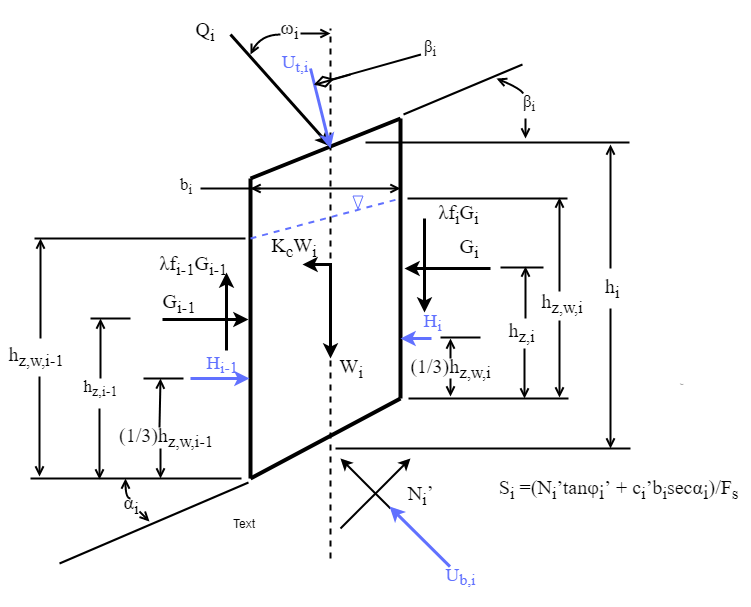
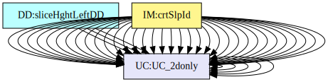
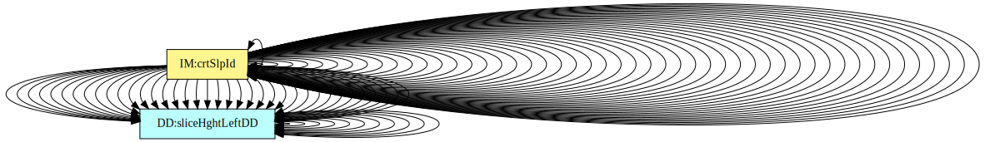
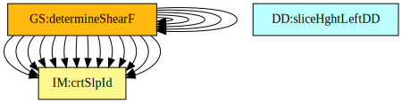
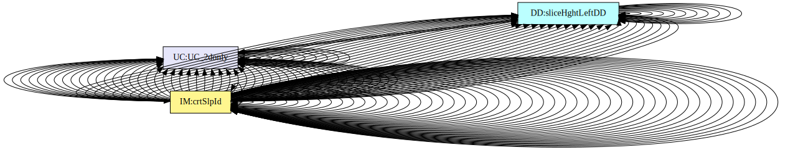

Software Requirements Specification for Slope Stability analysis Program
Henry Frankis and Brooks MacLachlan
Table of Contents
An outline of all sections included in this SRS is recorded here for easy reference.
- Table of Contents
- Reference Material
- Introduction
- General System Description
- Specific System Description
- Requirements
- Likely Changes
- Unlikely Changes
- Traceability Matrices and Graphs
- Values of Auxiliary Constants
- References
Reference Material
This section records information for easy reference.
Table of Units
The unit system used throughout is SI (Système International d’Unités). In addition to the basic units, several derived units are also used. For each unit, the Table of Units lists the symbol, a description, and the SI name.
| Symbol | Description | SI Name |
|---|---|---|
| \({{}^{\circ}}\) | angle | degree |
| \({\text{kg}}\) | mass | kilogram |
| \({\text{m}}\) | length | metre |
| \({\text{N}}\) | force | newton |
| \({\text{Pa}}\) | pressure | pascal |
| \({\text{s}}\) | time | second |
Table of Units
Table of Symbols
The symbols used in this document are summarized in the Table of Symbols along with their units. Throughout the document, a subscript \(i\) indicates that the value will be taken at, and analyzed at, a slice or slice interface composing the total slip mass. For vector quantities, the units shown are for each component of the vector.
| Symbol | Description | Units |
|---|---|---|
| \(A\) | Area: A part of an object or surface. | \({\text{m}^{2}}\) |
| \(\boldsymbol{a}\text{(}t\text{)}\) | Acceleration: The rate of change of a body’s velocity. | \(\frac{\text{m}}{\text{s}^{2}}\) |
| \(\boldsymbol{b}\) | Base Width of Slices: The width of each slice in the \(x\)-direction. | \({\text{m}}\) |
| \({\boldsymbol{C}_{\text{den}}}\) | Proportionality Constant Denominator: Values for each slice that sum together to form the denominator of the interslice normal to shear force proportionality constant. | \({\text{N}}\) |
| \({\boldsymbol{C}_{\text{num}}}\) | Proportionality Constant Numerator: Values for each slice that sum together to form the numerator of the interslice normal to shear force proportionality constant. | \({\text{N}}\) |
| \(c’\) | Effective Cohesion: The internal pressure that sticks particles of soil together. | \({\text{Pa}}\) |
| \(\mathit{const_f}\) | Decision on F: A Boolean decision on which form of f the user desires: constant if true, or half-sine if false. | – |
| \({F_{\text{n}}}\) | Total Normal Force: Component of a force in the normal direction. | \({\text{N}}\) |
| \({F_{\text{rot}}}\) | Force Causing Rotation: A force in the direction of rotation. | \({\text{N}}\) |
| \({F_{\text{S}}}\) | Factor of Safety: The global stability metric of a slip surface of a slope, defined as the ratio of resistive shear force to mobilized shear force. | – |
| \({F_{\text{t}}}\) | Tangential Force: Component of a force in the tangential direction. | \({\text{N}}\) |
| \({F_{\text{x}}}\) | \(x\)-coordinate of the Force: The force acting in the \(x\)-direction. | \({\text{N}}\) |
| \({F_{\text{y}}}\) | \(y\)-coordinate of the Force: The force acting in the \(y\)-direction. | \({\text{N}}\) |
| \(\boldsymbol{F}\) | Force: An interaction that tends to produce change in the motion of an object. | \({\text{N}}\) |
| \({{\boldsymbol{F}_{\text{x}}}^{\text{G}}}\) | Sums of the Interslice Normal Forces: The sums of the normal forces acting on each pair of adjacent interslice boundaries. | \({\text{N}}\) |
| \({{\boldsymbol{F}_{\text{x}}}^{\text{H}}}\) | Sums of the Interslice Normal Water Forces: The sums of the normal water forces acting on each pair of adjacent interslice boundaries. | \({\text{N}}\) |
| \(\boldsymbol{f}\) | Interslice Normal to Shear Force Ratio Variation Function: A function of distance in the \(x\)-direction that describes the variation of the interslice normal to shear ratio. | – |
| \(\boldsymbol{G}\) | Interslice Normal Forces: The forces per meter in the \(z\)-direction exerted between each pair of adjacent slices. | \(\frac{\text{N}}{\text{m}}\) |
| \(\boldsymbol{g}\) | Gravitational Acceleration: The approximate acceleration due to gravity on Earth at sea level. | \(\frac{\text{m}}{\text{s}^{2}}\) |
| \(\boldsymbol{H}\) | Interslice Normal Water Forces: The normal water forces per meter in the \(z\)-direction exerted in the \(x\)-direction between each pair of adjacent slices. | \(\frac{\text{N}}{\text{m}}\) |
| \(h\) | Height: The distance above a reference point for a point of interest. | \({\text{m}}\) |
| \(\boldsymbol{h}\) | \(y\)-direction Heights of Slices: The heights in the \(y\)-direction from the base of each slice to the slope surface, at the \(x\)-direction midpoint of the slice. | \({\text{m}}\) |
| \({\boldsymbol{h}^{\text{L}}}\) | Heights of the Left Side of Slices: The heights of the left side of each slice, assuming slice surfaces have negative slope. | \({\text{m}}\) |
| \({\boldsymbol{h}^{\text{R}}}\) | Heights of the Right Side of Slices: The heights of the right side of each slice, assuming slice surfaces have negative slope. | \({\text{m}}\) |
| \({\boldsymbol{h}_{\text{z}}}\) | Heights of Interslice Normal Forces: The heights in the \(y\)-direction of the interslice normal forces on each slice. | \({\text{m}}\) |
| \({\boldsymbol{h}_{\text{z,w}}}\) | Heights of the Water Table: The heights in the \(y\)-direction from the base of each slice to the water table. | \({\text{m}}\) |
| \(i\) | Index: A number representing a single slice. | – |
| \(\boldsymbol{\hat{j}}\) | Unit Vector: A vector that has a magnitude of one. | – |
| \({K_{\text{c}}}\) | Seismic Coefficient: The proportionality factor of force that weight pushes outwards; caused by seismic earth movements. | – |
| \({\boldsymbol{L}_{b}}\) | Total Base Lengths of Slices: The lengths of each slice in the direction parallel to the slope of the base. | \({\text{m}}\) |
| \({\boldsymbol{L}_{s}}\) | Surface Lengths of Slices: The lengths of each slice in the direction parallel to the slope of the surface. | \({\text{m}}\) |
| \(M\) | Moment: A measure of the tendency of a body to rotate about a specific point or axis. | \(\text{N}\text{m}\) |
| \(m\) | Mass: The quantity of matter in a body. | \({\text{kg}}\) |
| \(\boldsymbol{N}\) | Normal Forces: The total reactive forces per meter in the \(z\)-direction for each slice of a soil surface subject to a body resting on it. | \(\frac{\text{N}}{\text{m}}\) |
| \(\boldsymbol{N’}\) | Effective Normal Forces: The forces per meter in the \(z\)-direction for each slice of a soil surface, subtracting pore water reactive force from total reactive force. | \(\frac{\text{N}}{\text{m}}\) |
| \(n\) | Number of Slices: The number of slices into which the slip surface is divided. | – |
| \(P\) | Resistive Shear Force: The Mohr Coulomb frictional force that describes the limit of mobilized shear force that can be withstood before failure. | \({\text{N}}\) |
| \(\boldsymbol{P}\) | Resistive Shear Forces: The Mohr Coulomb frictional forces per meter in the \(z\)-direction for each slice that describe the limit of mobilized shear force the slice can withstand before failure. | \(\frac{\text{N}}{\text{m}}\) |
| \(p\) | Pressure: A force exerted over an area. | \({\text{Pa}}\) |
| \(\boldsymbol{Q}\) | External Forces: The forces per meter in the \(z\)-direction acting into the surface from the midpoint of each slice. | \(\frac{\text{N}}{\text{m}}\) |
| \(\boldsymbol{R}\) | Resistive Shear Forces Without the Influence of Interslice Forces: The resistive shear forces per meter without the influence of interslice forces in the \(z\)-direction for each slice. | \(\frac{\text{N}}{\text{m}}\) |
| \(r\) | Length of the Moment Arm: The distance between a force causing rotation and the axis of rotation. | \({\text{m}}\) |
| \(\boldsymbol{r}\) | Position Vector: A vector from the origin of the Cartesian coordinate system defined to the point where the force is applied. | \({\text{m}}\) |
| \(S\) | Mobilized Shear Force: The shear force in the direction of potential motion. | \({\text{N}}\) |
| \(\boldsymbol{S}\) | Mobilized Shear Force: The mobilized shear force per meter in the \(z\)-direction for each slice. | \(\frac{\text{N}}{\text{m}}\) |
| \(\boldsymbol{T}\) | Mobilized Shear Forces Without the Influence of Interslice Forces: The mobilized shear forces per meter without the influence of interslice forces in the \(z\)-direction for each slice. | \(\frac{\text{N}}{\text{m}}\) |
| \({\boldsymbol{U}_{\text{b}}}\) | Base Hydrostatic Forces: The forces per meter in the \(z\)-direction from water pressure within each slice. | \(\frac{\text{N}}{\text{m}}\) |
| \({\boldsymbol{U}_{\text{g}}}\) | Surface Hydrostatic Forces: The forces per meter in the \(z\)-direction from water pressure acting into each slice from standing water on the slope surface. | \(\frac{\text{N}}{\text{m}}\) |
| \(u\) | Pore Pressure: The pressure that comes from water within the soil. | \({\text{Pa}}\) |
| \(\boldsymbol{u}\) | Displacement: The change in an object’s location relative to a reference point. | \({\text{m}}\) |
| \(V\) | Volume: The amount of space that a substance or object occupies. | \({\text{m}^{3}}\) |
| \({\boldsymbol{V}_{\text{dry}}}\) | Volumes of Dry Soil: The amount of space occupied by dry soil for each slice. | \({\text{m}^{3}}\) |
| \({\boldsymbol{V}_{\text{sat}}}\) | Volumes of Saturated Soil: The amount of space occupied by saturated soil for each slice. | \({\text{m}^{3}}\) |
| \(v\) | Local Index: Used as a bound variable index in calculations. | – |
| \(W\) | Weight: The gravitational force acting on an object. | \({\text{N}}\) |
| \(\boldsymbol{W}\) | Weights: The downward force per meter in the \(z\)-direction on each slice caused by gravity. | \(\frac{\text{N}}{\text{m}}\) |
| \(\boldsymbol{X}\) | Interslice Shear Forces: The shear forces per meter in the \(z\)-direction exerted between adjacent slices. | \(\frac{\text{N}}{\text{m}}\) |
| \(x\) | \(x\)-coordinate: The \(x\)-coordinate in the Cartesian coordinate system. | \({\text{m}}\) |
| \({{x_{\text{slip}}}^{\text{maxEtr}}}\) | Maximum Entry \(x\)-coordinate: The maximum potential \(x\)-coordinate for the entry point of a slip surface. | \({\text{m}}\) |
| \({{x_{\text{slip}}}^{\text{maxExt}}}\) | Maximum Exit \(x\)-coordinate: The maximum potential \(x\)-coordinate for the exit point of a slip surface. | \({\text{m}}\) |
| \({{x_{\text{slip}}}^{\text{minEtr}}}\) | Minimum Entry \(x\)-coordinate: The minimum potential \(x\)-coordinate for the entry point of a slip surface. | \({\text{m}}\) |
| \({{x_{\text{slip}}}^{\text{minExt}}}\) | Minimum Exit \(x\)-coordinate: The minimum potential \(x\)-coordinate for the exit point of a slip surface. | \({\text{m}}\) |
| \({\boldsymbol{x}_{\text{cs}}}\text{,}{\boldsymbol{y}_{\text{cs}}}\) | Critical Slip Surface Coordinates: The set of \(x\)-coordinates and \(y\)-coordinates that describe the vertices of the critical slip surface. | \({\text{m}}\) |
| \({\boldsymbol{x}_{\text{slip}}}\) | \(x\)-coordinates of the Slip Surface: \(x\)-coordinates of points on the slip surface. | \({\text{m}}\) |
| \({\boldsymbol{x}_{\text{slope}}}\) | \(x\)-coordinates of the Slope: \(x\)-coordinates of points on the soil slope. | \({\text{m}}\) |
| \({\boldsymbol{x}_{\text{wt}}}\) | \(x\)-coordinates of the Water Table: X-positions of the water table. | \({\text{m}}\) |
| \(y\) | \(y\)-coordinate: The \(y\)-coordinate in the Cartesian coordinate system. | \({\text{m}}\) |
| \({{y_{\text{slip}}}^{\text{max}}}\) | Maximum \(y\)-coordinate: The maximum potential \(y\)-coordinate of a point on a slip surface. | \({\text{m}}\) |
| \({{y_{\text{slip}}}^{\text{min}}}\) | Minimum \(y\)-coordinate: The minimum potential \(y\)-coordinate of a point on a slip surface. | \({\text{m}}\) |
| \({\boldsymbol{y}_{\text{slip}}}\) | \(y\)-coordinates of the Slip Surface: Heights of the slip surface. | \({\text{m}}\) |
| \({\boldsymbol{y}_{\text{slope}}}\) | \(y\)-coordinates of the Slope: \(y\)-coordinates of points on the soil slope. | \({\text{m}}\) |
| \({\boldsymbol{y}_{\text{wt}}}\) | \(y\)-coordinates of the Water Table: Heights of the water table. | \({\text{m}}\) |
| \(z\) | \(z\)-coordinate: The \(z\)-coordinate in the Cartesian coordinate system. | \({\text{m}}\) |
| \(\boldsymbol{α}\) | Base Angles: The angles between the base of each slice and the horizontal. | \({{}^{\circ}}\) |
| \(\boldsymbol{β}\) | Surface Angles: The angles between the surface of each slice and the horizontal. | \({{}^{\circ}}\) |
| \(γ\) | Specific Weight: The weight per unit volume. | \(\frac{\text{N}}{\text{m}^{3}}\) |
| \({γ_{\text{dry}}}\) | Soil Dry Unit Weight: The weight of a dry soil/ground layer divided by the volume of the layer. | \(\frac{\text{N}}{\text{m}^{3}}\) |
| \({γ_{\text{sat}}}\) | Soil Saturated Unit Weight: The weight of saturated soil/ground layer divided by the volume of the layer. | \(\frac{\text{N}}{\text{m}^{3}}\) |
| \({γ_{w}}\) | Unit Weight of Water: The weight of one cubic meter of water. | \(\frac{\text{N}}{\text{m}^{3}}\) |
| \(λ\) | Proportionality Constant: The ratio of the interslice normal to the interslice shear force. | – |
| \(π\) | Ratio of Circumference to Diameter for Any Circle: The ratio of a circle’s circumference to its diameter. | – |
| \(ρ\) | Density: The mass per unit volume. | \(\frac{\text{kg}}{\text{m}^{3}}\) |
| \(σ\) | Total Normal Stress: The total force per area acting on the soil mass. | \({\text{Pa}}\) |
| \(σ’\) | Effective Stress: The stress in a soil mass that is effective in causing volume changes and mobilizes the shear strength arising from friction; represents the average stress carried by the soil skeleton. | \({\text{Pa}}\) |
| \({σ_{N}}’\) | Effective Normal Stress: The normal stress in a soil mass that is effective in causing volume changes; represents the average normal stress carried by the soil skeleton. | \({\text{Pa}}\) |
| \(τ\) | Tangential Stress: The shear force per unit area. | \({\text{Pa}}\) |
| \({τ^{\text{f}}}\) | Shear Strength: The strength of a material against shear failure. | \({\text{Pa}}\) |
| \(\boldsymbol{τ}\) | Torque: A twisting force that tends to cause rotation. | \(\text{N}\text{m}\) |
| \(\boldsymbol{Φ}\) | First Function for Incorporating Interslice Forces Into Shear Force: The function for converting resistive shear without the influence of interslice forces, to a calculation considering the interslice forces. | – |
| \(φ’\) | Effective Angle of Friction: The angle of inclination with respect to the horizontal axis of the Mohr-Coulomb shear resistance line. | \({{}^{\circ}}\) |
| \(\boldsymbol{Ψ}\) | Second Function for Incorporating Interslice Forces Into Shear Force: The function for converting mobile shear without the influence of interslice forces, to a calculation considering the interslice forces. | – |
| \(\boldsymbol{ω}\) | Imposed Load Angles: The angles between the external force acting into the surface of each slice and the vertical. | \({{}^{\circ}}\) |
Table of Symbols
Abbreviations and Acronyms
| Abbreviation | Full Form |
|---|---|
| 2D | Two-Dimensional |
| 3D | Three-Dimensional |
| A | Assumption |
| DD | Data Definition |
| GD | General Definition |
| GS | Goal Statement |
| IM | Instance Model |
| LC | Likely Change |
| PS | Physical System Description |
| R | Requirement |
| RefBy | Referenced by |
| Refname | Reference Name |
| SRS | Software Requirements Specification |
| SSP | Slope Stability analysis Program |
| TM | Theoretical Model |
| UC | Unlikely Change |
| Uncert. | Typical Uncertainty |
Abbreviations and Acronyms
Introduction
A slope of geological mass, composed of soil and rock and sometimes water, is subject to the influence of gravity on the mass. This can cause instability in the form of soil or rock movement. The effects of soil or rock movement can range from inconvenient to seriously hazardous, resulting in significant life and economic losses. Slope stability is of interest both when analysing natural slopes, and when designing an excavated slope. Slope stability analysis is the assessment of the safety of a slope, identifying the surface most likely to experience slip and an index of its relative stability known as the factor of safety..
The following section provides an overview of the Software Requirements Specification (SRS) for a slope stability analysis problem. The developed program will be referred to as the Slope Stability analysis Program (SSP) based on the original, manually created version of SSP. This section explains the purpose of this document, the scope of the requirements, the characteristics of the intended reader, and the organization of the document.
Purpose of Document
The primary purpose of this document is to record the requirements of SSP. Goals, assumptions, theoretical models, definitions, and other model derivation information are specified, allowing the reader to fully understand and verify the purpose and scientific basis of SSP. With the exception of system constraints, this SRS will remain abstract, describing what problem is being solved, but not how to solve it.
This document will be used as a starting point for subsequent development phases, including writing the design specification and the software verification and validation plan. The design document will show how the requirements are to be realized, including decisions on the numerical algorithms and programming environment. The verification and validation plan will show the steps that will be used to increase confidence in the software documentation and the implementation. Although the SRS fits in a series of documents that follow the so-called waterfall model, the actual development process is not constrained in any way. Even when the waterfall model is not followed, as Parnas and Clements point out parnasClements1986, the most logical way to present the documentation is still to “fake” a rational design process.
Scope of Requirements
The scope of the requirements includes stability analysis of a two-dimensional (2D) soil mass, composed of a single homogeneous layer with constant material properties. The soil mass is assumed to extend infinitely in the third dimension. The analysis will be at an instant in time; factors that may change the soil properties over time will not be considered.
Characteristics of Intended Reader
Reviewers of this documentation should have an understanding of undergraduate level 4 physics and undergraduate level 2 or higher solid mechanics. It would be an asset to understand soil mechanics. The users of SSP can have a lower level of expertise, as explained in Sec:User Characteristics.
Organization of Document
The organization of this document follows the template for an SRS for scientific computing software proposed by koothoor2013, smithLai2005, smithEtAl2007, and smithKoothoor2016. The presentation follows the standard pattern of presenting goals, theories, definitions, and assumptions. For readers that would like a more bottom up approach, they can start reading the instance models and trace back to find any additional information they require.
The goal statements are refined to the theoretical models and the theoretical models to the instance models. The instance models provide the set of algebraic equations that must be solved.
General System Description
This section provides general information about the system. It identifies the interfaces between the system and its environment, describes the user characteristics, and lists the system constraints.
System Context
Fig:sysCtxDiag shows the system context. A circle represents an external entity outside the software. A rectangle represents the software system itself (SSP). Arrows are used to show the data flow between the system and its environment.

Figure: System Context
The responsibilities of the user and the system are as follows:
- User Responsibilities
- Provide the input data related to the soil layer(s) and water table (if applicable), ensuring conformation to input data format required by SSP
- Ensure that consistent units are used for input variables
- Ensure required software assumptions are appropriate for the problem to which the user is applying the software
- SSP Responsibilities
- Detect data type mismatch, such as a string of characters input instead of a floating point number
- Verify that the inputs satisfy the required physical and other data constraints
- Identify the critical slip surface within the possible input range
- Find the factor of safety for the slope
- Find the interslice normal force and shear force along the critical slip surface
User Characteristics
The end user of SSP should have an understanding of undergraduate Level 1 Calculus and Physics, and be familiar with soil and material properties, specifically effective cohesion, effective angle of friction, and unit weight.
System Constraints
The Morgenstern-Price method morgenstern1965, which involves dividing the slope into vertical slices, will be used to derive the equations for analysing the slope.
Specific System Description
This section first presents the problem description, which gives a high-level view of the problem to be solved. This is followed by the solution characteristics specification, which presents the assumptions, theories, and definitions that are used.
Problem Description
A system is needed to evaluate the factor of safety of a slope’s slip surface and identify the critical slip surface of the slope, as well as the interslice normal force and shear force along the critical slip surface.
Terminology and Definitions
This subsection provides a list of terms that are used in the subsequent sections and their meaning, with the purpose of reducing ambiguity and making it easier to correctly understand the requirements.
- Factor of safety: The global stability metric of a slip surface of a slope, defined as the ratio of resistive shear force to mobilized shear force.
- Slip surface: A surface within a slope that has the potential to fail or displace due to load or other forces.
- Critical slip surface: Slip surface of the slope that has the lowest factor of safety, and is therefore most likely to experience failure.
- Water table: The upper boundary of a saturated zone in the ground.
- Stress: The ratio of an applied force to a cross-sectional area.
- Strain: A measure of deformation representing the displacement between particles in the body relative to a reference length.
- Normal force: A force applied perpendicular to the plane of the material.
- Shear force: A force applied parallel to the plane of the material.
- Mobilized shear force: The shear force in the direction of potential motion, thus encouraging motion along the plane.
- Resistive shear force: The shear force in the direction opposite to the direction of potential motion, thus hindering motion along the plane.
- Effective forces and stresses: The normal force or normal stress carried by the soil skeleton, composed of the effective force or stress and the force or stress exerted by water.
- Cohesion: An attractive force between adjacent particles that holds the matter together.
- Isotropy: A condition where the value of a property is independent of the direction in which it is measured.
- Plane strain: A condition where the resultant stresses in one of the directions of a three-dimensional material can be approximated as zero. This condition results when a body is constrained to not deform in one direction, or when the length of one dimension of the body dominates the others, to the point where it can be assumed as infinite. Stresses in the direction of the dominant dimension can be approximated as zero.
Physical System Description
The physical system of SSP, as shown in Fig:PhysicalSystem, includes the following elements:
PS1: A slope comprised of one soil layer.
PS2: A water table, which may or may not exist.

Figure: An example slope for analysis by SSP, where the dashed line represents the water table
Morgenstern-Price analysis morgenstern1965 of the slope involves representing the slope as a series of vertical slices. As shown in Fig:IndexConvention, the index \(i\) is used to denote a value for a single slice, and an interslice value at a given index \(i\) refers to the value between slice \(i\) and adjacent slice \(i+1\).

Figure: Index convention for slice and interslice values
A free body diagram of the forces acting on a slice is displayed in Fig:ForceDiagram. The specific forces and symbols will be discussed in detail in Sec:General Definitions and Sec:Data Definitions.

Figure: Free body diagram of forces acting on a slice
Goal Statements
Given the shape of the soil mass, the location of the water table, and the material properties of the soil, the goal statements are:
Identify-Crit-and-FS: Identify the critical slip surface and the corresponding factor of safety.
Determine-Normal-Forces: Determine the interslice normal forces between each pair of vertical slices of the slope.
Determine-Shear-Forces: Determine the interslice shear forces between each pair of vertical slices of the slope.
Solution Characteristics Specification
The instance models that govern SSP are presented in the Instance Model Section. The information to understand the meaning of the instance models and their derivation is also presented, so that the instance models can be verified.
Assumptions
This section simplifies the original problem and helps in developing the theoretical models by filling in the missing information for the physical system. The assumptions refine the scope by providing more detail.
Slip-Surface-Concave: The slip surface is concave with respect to the slope surface. The (\({\boldsymbol{x}_{\text{slip}}}\), \({\boldsymbol{y}_{\text{slip}}}\)) coordinates of a slip surface follow a concave up function. (RefBy: IM:crtSlpId.)
Factor-of-Safety: The factor of safety is assumed to be constant across the entire slip surface. (RefBy: GD:mobShr.)
Soil-Layer-Homogeneous: The soil mass is homogeneous, with consistent soil properties throughout. (RefBy: GD:sliceWght, GD:resShr, and LC:Calculate-Inhomogeneous-Soil-Layers.)
Soil-Properties: The soil properties are independent of dry or saturated conditions, with the exception of unit weight. (RefBy: GD:resShr.)
Soil-Layers-Isotropic: The soil mass is treated as if the effective cohesion and effective angle of friction are isotropic properties. (RefBy: GD:resShr.)
Interslice-Norm-Shear-Forces-Linear: Following the assumption of Morgenstern and Price (morgenstern1965), interslice normal forces and interslice shear forces have a proportional relationship, depending on a proportionality constant (\(λ\)) and a function (\(\boldsymbol{f}\)) describing variation depending on \(x\) position. (RefBy: IM:nrmShrFor, GD:normShrR, IM:fctSfty, and UC:Normal-And-Shear-Linear-Only.)
Plane-Strain-Conditions: The slope and slip surface extends far into and out of the geometry (\(z\) coordinate). This implies plane strain conditions, making 2D analysis appropriate. (RefBy: GD:srfWtrF, GD:sliceWght, GD:resShr, GD:effNormF, and GD:baseWtrF.)
Effective-Norm-Stress-Large: The effective normal stress is large enough that the shear strength to effective normal stress relationship can be approximated as a linear relationship. (RefBy: TM:equilibrium and UC:2D-Analysis-Only.)
Surface-Base-Slice-between-Interslice-Straight-Lines: The surface and base of a slice are approximated as straight lines. (RefBy: GD:srfWtrF, GD:sliceWght, TM:mcShrStrgth, GD:baseWtrF, DD:slcHeight, DD:angleB, and DD:angleA.)
Edge-Slices: The interslice forces at the 0th and \(n\)th interslice interfaces are zero. (RefBy: IM:nrmShrFor, IM:intsliceFs, and IM:fctSfty.)
Seismic-Force: There is no seismic force acting on the slope. (RefBy: IM:nrmShrFor, IM:fctSfty, and LC:Calculate-Seismic-Force.)
Surface-Load: There is no imposed surface load, and therefore no external forces, acting on the slope. (RefBy: IM:nrmShrFor, IM:fctSfty, and LC:Calculate-External-Force.)
Water-Intersects-Base-Edge: The water table only intersects the base of a slice at an edge of the slice. (RefBy: GD:sliceWght and GD:baseWtrF.)
Water-Intersects-Surface-Edge: The water table only intersects the slope surface at the edge of a slice. (RefBy: GD:srfWtrF and GD:sliceWght.)
Negligible-Effect-Surface-Slope-Seismic: The effect of the slope of the surface of the soil on the seismic force is assumed to be negligible. (RefBy: GD:momentEql.)
Hydrostatic-Force-Slice-Midpoint: The resultant surface hydrostatic forces act into the midpoint of each slice surface and the resultant base hydrostatic forces act into the midpoint of each slice base. (RefBy: GD:srfWtrF, GD:momentEql, and GD:baseWtrF.)
Theoretical Models
This section focuses on the general equations and laws that SSP is based on.
| Refname | TM:factOfSafety |
|---|---|
| Label | Factor of safety |
| Equation | \[{F_{\text{S}}}=\frac{P}{S}\] |
| Description |
|
| Source | fredlund1977 |
| RefBy | GD:mobShr |
| Refname | TM:equilibrium |
|---|---|
| Label | Equilibrium |
| Equation | \[\displaystyle\sum{{F_{\text{x}}}}=0\]\[\displaystyle\sum{{F_{\text{y}}}}=0\]\[\displaystyle\sum{M}=0\] |
| Description |
|
| Notes |
|
| Source | fredlund1977 |
| RefBy | GD:normForcEq, GD:momentEql, and GD:bsShrFEq |
| Refname | TM:mcShrStrgth |
|---|---|
| Label | Mohr-Coulumb shear strength |
| Equation | \[{τ^{\text{f}}}={σ_{N}}‘\,\tan\left(φ’\right)+c’\] |
| Description |
|
| Notes |
|
| Source | fredlund1977 |
| RefBy | GD:resShr |
| Refname | TM:effStress |
|---|---|
| Label | Effective stress |
| Equation | \[σ’=σ-u\] |
| Description |
|
| Notes |
|
| Source | fredlund1977 |
| RefBy | GD:effNormF |
| Refname | TM:NewtonSecLawMot |
|---|---|
| Label | Newton’s second law of motion |
| Equation | \[\boldsymbol{F}=m\,\boldsymbol{a}\text{(}t\text{)}\] |
| Description |
|
| Notes |
|
| Source | – |
| RefBy | GD:weight |
General Definitions
This section collects the laws and equations that will be used to build the instance models.
| Refname | GD:normForcEq |
|---|---|
| Label | Normal force equilibrium |
| Units | \(\frac{\text{N}}{\text{m}}\) |
| Equation | \[{\boldsymbol{N}}_{i}=\left({\boldsymbol{W}}_{i}-{\boldsymbol{X}}_{i-1}+{\boldsymbol{X}}_{i}+{\boldsymbol{U}_{\text{g},i}}\,\cos\left({\boldsymbol{β}}_{i}\right)+{\boldsymbol{Q}}_{i}\,\cos\left({\boldsymbol{ω}}_{i}\right)\right)\,\cos\left({\boldsymbol{α}}_{i}\right)+\left(-{K_{\text{c}}}\,{\boldsymbol{W}}_{i}-{\boldsymbol{G}}_{i}+{\boldsymbol{G}}_{i-1}-{\boldsymbol{H}}_{i}+{\boldsymbol{H}}_{i-1}+{\boldsymbol{U}_{\text{g},i}}\,\sin\left({\boldsymbol{β}}_{i}\right)+{\boldsymbol{Q}}_{i}\,\sin\left({\boldsymbol{ω}}_{i}\right)\right)\,\sin\left({\boldsymbol{α}}_{i}\right)\] |
| Description |
|
| Notes |
|
| Source | chen2005 |
| RefBy | IM:fctSfty |
Normal force equilibrium is derived from the free body diagram of Fig:ForceDiagram in Sec:Physical System Description.
| Refname | GD:bsShrFEq |
|---|---|
| Label | Base shear force equilibrium |
| Units | \(\frac{\text{N}}{\text{m}}\) |
| Equation | \[{\boldsymbol{S}}_{i}=\left({\boldsymbol{W}}_{i}-{\boldsymbol{X}}_{i-1}+{\boldsymbol{X}}_{i}+{\boldsymbol{U}_{\text{g},i}}\,\cos\left({\boldsymbol{β}}_{i}\right)+{\boldsymbol{Q}}_{i}\,\cos\left({\boldsymbol{ω}}_{i}\right)\right)\,\sin\left({\boldsymbol{α}}_{i}\right)-\left(-{K_{\text{c}}}\,{\boldsymbol{W}}_{i}-{\boldsymbol{G}}_{i}+{\boldsymbol{G}}_{i-1}-{\boldsymbol{H}}_{i}+{\boldsymbol{H}}_{i-1}+{\boldsymbol{U}_{\text{g},i}}\,\sin\left({\boldsymbol{β}}_{i}\right)+{\boldsymbol{Q}}_{i}\,\sin\left({\boldsymbol{ω}}_{i}\right)\right)\,\cos\left({\boldsymbol{α}}_{i}\right)\] |
| Description |
|
| Notes |
|
| Source | chen2005 |
| RefBy | IM:fctSfty |
Base shear force equilibrium is derived from the free body diagram of Fig:ForceDiagram in Sec:Physical System Description.
| Refname | GD:resShr |
|---|---|
| Label | Resistive shear force |
| Units | \(\frac{\text{N}}{\text{m}}\) |
| Equation | \[{\boldsymbol{P}}_{i}={\boldsymbol{N’}}_{i}\,\tan\left({φ’}_{i}\right)+{c’}_{i}\,{\boldsymbol{L}_{b,i}}\] |
| Description |
|
| Notes |
|
| Source | chen2005 |
| RefBy | GD:mobShr |
Derived by substituting DD:normStress and DD:tangStress into the Mohr-Coulomb shear strength, TM:mcShrStrgth, and multiplying both sides of the equation by the area of the slice in the shear-\(z\) plane. Since the slope is assumed to extend infinitely in the \(z\)-direction (A:Plane-Strain-Conditions), the resulting forces are expressed per metre in the \(z\)-direction. The effective angle of friction \(φ’\) and the effective cohesion \(c’\) are not indexed by \(i\) because they are assumed to be isotropic (A:Soil-Layers-Isotropic) and the soil is assumed to be homogeneous, with constant soil properties throughout (A:Soil-Layer-Homogeneous, A:Soil-Properties).
| Refname | GD:mobShr |
|---|---|
| Label | Mobilized shear force |
| Units | \(\frac{\text{N}}{\text{m}}\) |
| Equation | \[{\boldsymbol{S}}_{i}=\frac{{\boldsymbol{P}}_{i}}{{F_{\text{S}}}}=\frac{{\boldsymbol{N’}}_{i}\,\tan\left({φ’}_{i}\right)+{c’}_{i}\,{\boldsymbol{L}_{b,i}}}{{F_{\text{S}}}}\] |
| Description |
|
| Notes |
|
| Source | chen2005 |
| RefBy | IM:fctSfty |
Mobilized shear forces is derived by dividing the definition of the \(\boldsymbol{P}\) from GD:resShr by the definition of the factor of safety from TM:factOfSafety. The factor of safety \({F_{\text{S}}}\) is not indexed by \(i\) because it is assumed to be constant for the entire slip surface (A:Factor-of-Safety).
| Refname | GD:effNormF |
|---|---|
| Label | Effective normal force |
| Units | \(\frac{\text{N}}{\text{m}}\) |
| Equation | \[{\boldsymbol{N’}}_{i}={\boldsymbol{N}}_{i}-{\boldsymbol{U}_{\text{b},i}}\] |
| Description |
|
| Notes |
|
| Source | chen2005 |
| RefBy |
Derived by substituting DD:normStress into TM:effStress and multiplying both sides of the equation by the area of the slice in the shear-\(z\) plane. Since the slope is assumed to extend infinitely in the \(z\)-direction (A:Plane-Strain-Conditions), the resulting forces are expressed per metre in the \(z\)-direction.
| Refname | GD:resShearWO |
|---|---|
| Label | Resistive shear force, without interslice normal and shear forces |
| Units | \(\frac{\text{N}}{\text{m}}\) |
| Equation | \[{\boldsymbol{R}}_{i}=\left(\left({\boldsymbol{W}}_{i}+{\boldsymbol{U}_{\text{g},i}}\,\cos\left({\boldsymbol{β}}_{i}\right)\right)\,\cos\left({\boldsymbol{α}}_{i}\right)+\left(-{\boldsymbol{H}}_{i}+{\boldsymbol{H}}_{i-1}+{\boldsymbol{U}_{\text{g},i}}\,\sin\left({\boldsymbol{β}}_{i}\right)\right)\,\sin\left({\boldsymbol{α}}_{i}\right)-{\boldsymbol{U}_{\text{b},i}}\right)\,\tan\left({φ’}_{i}\right)+{c’}_{i}\,{\boldsymbol{L}_{b,i}}\] |
| Description |
|
| Notes |
|
| Source | chen2005 and karchewski2012 |
| RefBy | IM:intsliceFs and IM:fctSfty |
| Refname | GD:mobShearWO |
|---|---|
| Label | Mobilized shear force, without interslice normal and shear forces |
| Units | \(\frac{\text{N}}{\text{m}}\) |
| Equation | \[{\boldsymbol{T}}_{i}=\left({\boldsymbol{W}}_{i}+{\boldsymbol{U}_{\text{g},i}}\,\cos\left({\boldsymbol{β}}_{i}\right)\right)\,\sin\left({\boldsymbol{α}}_{i}\right)-\left(-{\boldsymbol{H}}_{i}+{\boldsymbol{H}}_{i-1}+{\boldsymbol{U}_{\text{g},i}}\,\sin\left({\boldsymbol{β}}_{i}\right)\right)\,\cos\left({\boldsymbol{α}}_{i}\right)\] |
| Description |
|
| Notes |
|
| Source | chen2005 and karchewski2012 |
| RefBy | IM:intsliceFs and IM:fctSfty |
| Refname | GD:normShrR |
|---|---|
| Label | Interslice shear forces |
| Units | \(\frac{\text{N}}{\text{m}}\) |
| Equation | \[\boldsymbol{X}=λ\,\boldsymbol{f}\,\boldsymbol{G}\] |
| Description |
|
| Notes |
|
| Source | chen2005 |
| RefBy | IM:nrmShrFor and IM:fctSfty |
| Refname | GD:momentEql |
|---|---|
| Label | Moment equilibrium |
| Units | \({\text{N}}\) |
| Equation | \[0=-{\boldsymbol{G}}_{i}\,\left({\boldsymbol{h}_{\text{z},i}}+\frac{{\boldsymbol{b}}_{i}}{2}\,\tan\left({\boldsymbol{α}}_{i}\right)\right)+{\boldsymbol{G}}_{i-1}\,\left({\boldsymbol{h}_{\text{z},i-1}}-\frac{{\boldsymbol{b}}_{i}}{2}\,\tan\left({\boldsymbol{α}}_{i}\right)\right)-{\boldsymbol{H}}_{i}\,\left(\frac{1}{3}\,{\boldsymbol{h}_{\text{z,w},i}}+\frac{{\boldsymbol{b}}_{i}}{2}\,\tan\left({\boldsymbol{α}}_{i}\right)\right)+{\boldsymbol{H}}_{i-1}\,\left(\frac{1}{3}\,{\boldsymbol{h}_{\text{z,w},i-1}}-\frac{{\boldsymbol{b}}_{i}}{2}\,\tan\left({\boldsymbol{α}}_{i}\right)\right)+\frac{{\boldsymbol{b}}_{i}}{2}\,\left({\boldsymbol{X}}_{i}+{\boldsymbol{X}}_{i-1}\right)+\frac{-{K_{\text{c}}}\,{\boldsymbol{W}}_{i}\,{\boldsymbol{h}}_{i}}{2}+{\boldsymbol{U}_{\text{g},i}}\,\sin\left({\boldsymbol{β}}_{i}\right)\,{\boldsymbol{h}}_{i}+{\boldsymbol{Q}}_{i}\,\sin\left({\boldsymbol{ω}}_{i}\right)\,{\boldsymbol{h}}_{i}\] |
| Description |
|
| Notes |
|
| Source | chen2005 |
| RefBy | IM:nrmShrFor |
Moment is equal to torque, so the equation from DD:torque will be used to calculate moments:
\[\boldsymbol{τ}=\boldsymbol{u}\times\boldsymbol{F}\]
Considering one dimension, with moments in the clockwise direction as positive and moments in the counterclockwise direction as negative, and replacing the torque symbol with the moment symbol, the equation simplifies to:
\[M={F_{\text{rot}}}\,r\]
where \({F_{\text{rot}}}\) is the force causing rotation and \(r\) is the length of the moment arm, or the distance between the force and the axis about which the rotation acts. To represent the moment equilibrium, the moments from each force acting on a slice must be considered and added together. The forces acting on a slice are all shown in Fig:ForceDiagram. The midpoint of the base of a slice is considered as the axis of rotation, from which the length of the moment arm is measured. Considering first the interslice normal force acting on slice interface \(i\), the moment is negative because the force tends to rotate the slice in a counterclockwise direction, and the length of the moment arm is the height of the force plus the difference in height between the base at slice interface \(i\) and the base at the midpoint of slice \(i\). Thus, the moment is expressed as:
\[-{\boldsymbol{G}}_{i}\,\left({\boldsymbol{h}_{\text{z},i}}+\frac{{\boldsymbol{b}}_{i}}{2}\,\tan\left({\boldsymbol{α}}_{i}\right)\right)\]
For the \(i-1\)th slice interface, the moment is similar but in the opposite direction:
\[{\boldsymbol{G}}_{i-1}\,\left({\boldsymbol{h}_{\text{z},i-1}}-\frac{{\boldsymbol{b}}_{i}}{2}\,\tan\left({\boldsymbol{α}}_{i}\right)\right)\]
Next, the interslice normal water force is considered. This force is zero at the height of the water table, then increases linearly towards the base of the slice due to the increasing water pressure. For such a triangular distribution, the resultant force acts at one-third of the height. Thus, for the interslice normal water force acting on slice interface \(i\), the moment is:
\[-{\boldsymbol{H}}_{i}\,\left(\frac{1}{3}\,{\boldsymbol{h}_{\text{z,w},i}}+\frac{{\boldsymbol{b}}_{i}}{2}\,\tan\left({\boldsymbol{α}}_{i}\right)\right)\]
The moment for the interslice normal water force acting on slice interface \(i-1\) is:
\[{\boldsymbol{H}}_{i-1}\,\left(\frac{1}{3}\,{\boldsymbol{h}_{\text{z,w},i-1}}+\frac{{\boldsymbol{b}}_{i}}{2}\,\tan\left({\boldsymbol{α}}_{i}\right)\right)\]
The interslice shear force at slice interface \(i\) tends to rotate in the clockwise direction, and the length of the moment arm is the length from the slice edge to the slice midpoint, equivalent to half of the width of the slice, so the moment is:
\[{\boldsymbol{X}}_{i}\,\frac{{\boldsymbol{b}}_{i}}{2}\]
The interslice shear force at slice interface \(i-1\) also tends to rotate in the clockwise direction, and has the same length of the moment arm, so the moment is:
\[{\boldsymbol{X}}_{i-1}\,\frac{{\boldsymbol{b}}_{i}}{2}\]
Seismic forces act over the entire height of the slice. For each horizontal segment of the slice, the seismic force is \({K_{\text{c}}}\,{\boldsymbol{W}}_{i}\) where \({\boldsymbol{W}}_{i}\) can be expressed as \(γ\,{\boldsymbol{b}}_{i}\,y\) using GD:weight where \(y\) is the height of the segment under consideration. The corresponding length of the moment arm is \(y\), the height from the base of the slice to the segment under consideration. In reality, the forces near the surface of the soil mass are slightly different due to the slope of the surface, but this difference is assumed to be negligible (A:Negligible-Effect-Surface-Slope-Seismic). The resultant moment from the forces on all of the segments with an equivalent resultant length of the moment arm is determined by taking the integral over the slice height. The forces tend to rotate in the counterclockwise direction, so the moment is negative:
\[-\int_{0}^{{\boldsymbol{h}}_{i}}{{K_{\text{c}}}\,γ\,{\boldsymbol{b}}_{i}\,y}\,dy\]
Solving the definite integral yields:
\[-{K_{\text{c}}}\,γ\,{\boldsymbol{b}}_{i}\,\frac{{\boldsymbol{h}}_{i}^{2}}{2}\]
Using GD:weight again to express \(γ\,{\boldsymbol{b}}_{i}\,{\boldsymbol{h}}_{i}\) as \({\boldsymbol{W}}_{i}\), the moment is:
\[-{K_{\text{c}}}\,{\boldsymbol{W}}_{i}\,\frac{{\boldsymbol{h}}_{i}}{2}\]
The surface hydrostatic force acts into the midpoint of the surface of the slice (A:Hydrostatic-Force-Slice-Midpoint). Thus, the vertical component of the force acts directly towards the point of rotation, and has a moment of zero. The horizontal component of the force tends to rotate in a clockwise direction and the length of the moment arm is the entire height of the slice. Thus, the moment is:
\[{\boldsymbol{U}_{\text{g},i}}\,\sin\left({\boldsymbol{β}}_{i}\right)\,{\boldsymbol{h}}_{i}\]
The external force again acts into the midpoint of the slice surface, so the vertical component does not contribute to the moment, and the length of the moment arm is again the entire height of the slice. The moment is:
\[{\boldsymbol{Q}}_{i}\,\sin\left({\boldsymbol{ω}}_{i}\right)\,{\boldsymbol{h}}_{i}\]
The base hydrostatic force and slice weight both act in the direction of the point of rotation (A:Hydrostatic-Force-Slice-Midpoint), therefore both have moments of zero. Thus, all of the moments have been determined. The moment equilibrium is then represented by the sum of all moments:
\[0=-{\boldsymbol{G}}_{i}\,\left({\boldsymbol{h}_{\text{z},i}}+\frac{{\boldsymbol{b}}_{i}}{2}\,\tan\left({\boldsymbol{α}}_{i}\right)\right)+{\boldsymbol{G}}_{i-1}\,\left({\boldsymbol{h}_{\text{z},i-1}}-\frac{{\boldsymbol{b}}_{i}}{2}\,\tan\left({\boldsymbol{α}}_{i}\right)\right)-{\boldsymbol{H}}_{i}\,\left(\frac{1}{3}\,{\boldsymbol{h}_{\text{z,w},i}}+\frac{{\boldsymbol{b}}_{i}}{2}\,\tan\left({\boldsymbol{α}}_{i}\right)\right)+{\boldsymbol{H}}_{i-1}\,\left(\frac{1}{3}\,{\boldsymbol{h}_{\text{z,w},i-1}}-\frac{{\boldsymbol{b}}_{i}}{2}\,\tan\left({\boldsymbol{α}}_{i}\right)\right)+\frac{{\boldsymbol{b}}_{i}}{2}\,\left({\boldsymbol{X}}_{i}+{\boldsymbol{X}}_{i-1}\right)+\frac{-{K_{\text{c}}}\,{\boldsymbol{W}}_{i}\,{\boldsymbol{h}}_{i}}{2}+{\boldsymbol{U}_{\text{g},i}}\,\sin\left({\boldsymbol{β}}_{i}\right)\,{\boldsymbol{h}}_{i}+{\boldsymbol{Q}}_{i}\,\sin\left({\boldsymbol{ω}}_{i}\right)\,{\boldsymbol{h}}_{i}\]
| Refname | GD:weight |
|---|---|
| Label | Weight |
| Units | \({\text{N}}\) |
| Equation | \[W=V\,γ\] |
| Description |
|
| Source | Definition of Weight |
| RefBy | GD:sliceWght and GD:momentEql |
Detailed derivation of weight:
Under the influence of gravity, and assuming a 2D Cartesian coordinate system with down as positive, an object has an acceleration vector of:
\[\boldsymbol{a}\text{(}t\text{)}=\begin{bmatrix}0\\\boldsymbol{g}\,\boldsymbol{\hat{j}}\end{bmatrix}\]
Since there is only one non-zero vector component, the scalar value \(W\) will be used for the weight. In this scenario, Newton’s second law of motion from TM:NewtonSecLawMot can be expressed as:
\[W=m\,\boldsymbol{g}\]
Mass can be expressed as density multiplied by volume, resulting in:
\[W=ρ\,V\,\boldsymbol{g}\]
Substituting specific weight as the product of density and gravitational acceleration yields:
\[W=V\,γ\]
| Refname | GD:sliceWght |
|---|---|
| Label | Slice weight |
| Units | \(\frac{\text{N}}{\text{m}}\) |
| Equation | \[{\boldsymbol{W}}_{i}={\boldsymbol{b}}_{i}\,\frac{1}{2}\,\begin{cases}\left({\boldsymbol{y}_{\text{slope},i}}-{\boldsymbol{y}_{\text{slip},i}}+{\boldsymbol{y}_{\text{slope},i-1}}-{\boldsymbol{y}_{\text{slip},i-1}}\right)\,{γ_{\text{sat}}}, & {\boldsymbol{y}_{\text{wt},i}}\gt{}{\boldsymbol{y}_{\text{slope},i}}\lor{}{\boldsymbol{y}_{\text{wt},i-1}}\gt{}{\boldsymbol{y}_{\text{slope},i-1}}\\\left({\boldsymbol{y}_{\text{slope},i}}-{\boldsymbol{y}_{\text{wt},i}}+{\boldsymbol{y}_{\text{slope},i-1}}-{\boldsymbol{y}_{\text{wt},i-1}}\right)\,{γ_{\text{dry}}}+\left({\boldsymbol{y}_{\text{wt},i}}-{\boldsymbol{y}_{\text{slip},i}}+{\boldsymbol{y}_{\text{wt},i-1}}-{\boldsymbol{y}_{\text{slip},i-1}}\right)\,{γ_{\text{sat}}}, & {\boldsymbol{y}_{\text{slope},i}}\geq{}{\boldsymbol{y}_{\text{wt},i}}\geq{}{\boldsymbol{y}_{\text{slip},i}}\land{}{\boldsymbol{y}_{\text{slope},i-1}}\geq{}{\boldsymbol{y}_{\text{wt},i-1}}\geq{}{\boldsymbol{y}_{\text{slip},i-1}}\\\left({\boldsymbol{y}_{\text{slope},i}}-{\boldsymbol{y}_{\text{slip},i}}+{\boldsymbol{y}_{\text{slope},i-1}}-{\boldsymbol{y}_{\text{slip},i-1}}\right)\,{γ_{\text{dry}}}, & {\boldsymbol{y}_{\text{wt},i}}\lt{}{\boldsymbol{y}_{\text{slip},i}}\lor{}{\boldsymbol{y}_{\text{wt},i-1}}\lt{}{\boldsymbol{y}_{\text{slip},i-1}}\end{cases}\] |
| Description |
|
| Notes |
|
| Source | fredlund1977 |
| RefBy | GD:resShearWO, GD:normForcEq, GD:momentEql, GD:mobShearWO, and GD:bsShrFEq |
For the case where the water table is above the slope surface, the weights come from the weight of the saturated soil. Substituting values for saturated soil into the equation for weight from GD:weight yields:
\[{\boldsymbol{W}}_{i}={\boldsymbol{V}_{\text{sat},i}}\,{γ_{\text{sat}}}\]
Due to A:Plane-Strain-Conditions, only two dimensions are considered, so the areas of saturated soil are considered instead of the volumes of saturated soil. Any given slice has a trapezoidal shape. The area of a trapezoid is the average of the lengths of the parallel sides multiplied by the length between the parallel sides. The parallel sides in this case are the interslice edges and the length between them is the width of the slice. Thus, the weights are defined as:
\[{\boldsymbol{W}}_{i}={\boldsymbol{b}}_{i}\,\frac{1}{2}\,\left({\boldsymbol{y}_{\text{slope},i}}-{\boldsymbol{y}_{\text{slip},i}}+{\boldsymbol{y}_{\text{slope},i-1}}-{\boldsymbol{y}_{\text{slip},i-1}}\right)\,{γ_{\text{sat}}}\]
For the case where the water table is below the slip surface, the weights come from the weight of the dry soil. Substituting values for dry soil into the equation for weight from GD:weight yields:
\[{\boldsymbol{W}}_{i}={\boldsymbol{V}_{\text{dry},i}}\,{γ_{\text{dry}}}\]
A:Plane-Strain-Conditions again allows for two-dimensional analysis so the areas of dry soil are considered instead of the volumes of dry soil. The trapezoidal slice shape is the same as in the previous case, so the weights are defined as:
\[{\boldsymbol{W}}_{i}={\boldsymbol{b}}_{i}\,\frac{1}{2}\,\left({\boldsymbol{y}_{\text{slope},i}}-{\boldsymbol{y}_{\text{slip},i}}+{\boldsymbol{y}_{\text{slope},i-1}}-{\boldsymbol{y}_{\text{slip},i-1}}\right)\,{γ_{\text{dry}}}\]
For the case where the water table is between the slope surface and slip surface, the weights are the sums of the weights of the dry portions and weights of the saturated portions of the soil. Substituting values for dry and saturated soil into the equation for weight from GD:weight and adding them together yields:
\[{\boldsymbol{W}}_{i}={\boldsymbol{V}_{\text{dry},i}}\,{γ_{\text{dry}}}+{\boldsymbol{V}_{\text{sat},i}}\,{γ_{\text{sat}}}\]
A:Plane-Strain-Conditions again allows for two-dimensional analysis so the areas of dry soil and areas of saturated soil are considered instead of the volumes of dry soil and volumes of saturated soil. The water table is assumed to only intersect a slice surface or base at a slice edge (A:Water-Intersects-Surface-Edge, A:Water-Intersects-Base-Edge), so the dry and saturated portions each have trapezoidal shape. For the dry portion, the parallel sides of the trapezoid are the lengths between the slope surface and water table at the slice edges. For the saturated portion, the parallel sides of the trapezoid are the lengths between the water table and slip surface at the slice edges. Thus, the weights are defined as:
\[{\boldsymbol{W}}_{i}={\boldsymbol{b}}_{i}\,\frac{1}{2}\,\left(\left({\boldsymbol{y}_{\text{slope},i}}-{\boldsymbol{y}_{\text{wt},i}}+{\boldsymbol{y}_{\text{slope},i-1}}-{\boldsymbol{y}_{\text{wt},i-1}}\right)\,{γ_{\text{dry}}}+\left({\boldsymbol{y}_{\text{wt},i}}-{\boldsymbol{y}_{\text{slip},i}}+{\boldsymbol{y}_{\text{wt},i-1}}-{\boldsymbol{y}_{\text{slip},i-1}}\right)\,{γ_{\text{sat}}}\right)\]
| Refname | GD:hsPressure |
|---|---|
| Label | Hydrostatic pressure |
| Units | \({\text{Pa}}\) |
| Equation | \[p=γ\,h\] |
| Description |
|
| Notes |
|
| Source | Definition of Pressure |
| RefBy | GD:srfWtrF and GD:baseWtrF |
| Refname | GD:baseWtrF |
|---|---|
| Label | Base hydrostatic force |
| Units | \(\frac{\text{N}}{\text{m}}\) |
| Equation | \[{\boldsymbol{U}_{\text{b},i}}={\boldsymbol{L}_{b,i}}\,{γ_{w}}\,\frac{1}{2}\,\begin{cases}{\boldsymbol{y}_{\text{wt},i}}-{\boldsymbol{y}_{\text{slip},i}}+{\boldsymbol{y}_{\text{wt},i-1}}-{\boldsymbol{y}_{\text{slip},i-1}}, & {\boldsymbol{y}_{\text{wt},i}}\gt{}{\boldsymbol{y}_{\text{slip},i}}\lor{}{\boldsymbol{y}_{\text{wt},i-1}}\gt{}{\boldsymbol{y}_{\text{slip},i-1}}\\0, & {\boldsymbol{y}_{\text{wt},i}}\leq{}{\boldsymbol{y}_{\text{slip},i}}\land{}{\boldsymbol{y}_{\text{wt},i-1}}\leq{}{\boldsymbol{y}_{\text{slip},i-1}}\end{cases}\] |
| Description |
|
| Notes |
|
| Source | fredlund1977 |
| RefBy | GD:resShearWO, GD:effNormF, and GD:baseWtrF |
The base hydrostatic forces come from the hydrostatic pressure exerted by the water above the base of each slice. The equation for hydrostatic pressure from GD:hsPressure is:
\[p=γ\,h\]
The specific weight in this case is the unit weight of water \({γ_{w}}\). The height in this case is the height from the slice base to the water table. This height is measured from the midpoint of the slice because the resultant hydrostatic force is assumed to act at the slice midpoint (A:Hydrostatic-Force-Slice-Midpoint). The height at the midpoint is the average of the height at slice interface \(i\) and the height at slice interface \(i-1\):
\[\frac{1}{2}\,\left({\boldsymbol{y}_{\text{wt},i}}-{\boldsymbol{y}_{\text{slip},i}}+{\boldsymbol{y}_{\text{wt},i-1}}-{\boldsymbol{y}_{\text{slip},i-1}}\right)\]
Due to A:Plane-Strain-Conditions, only two dimensions are considered, so the base hydrostatic forces are expressed as forces per meter. The pressures acting on the slices can thus be converted to base hydrostatic forces by multiplying by the corresponding length of the slice base \({\boldsymbol{L}_{b,i}}\), assuming the water table does not intersect a slice base except at a slice edge (A:Water-Intersects-Base-Edge). Thus, in the case where the height of the water table is above the height of the slip surface, the base hydrostatic forces are defined as:
\[{\boldsymbol{U}_{\text{b},i}}={\boldsymbol{L}_{b,i}}\,{γ_{w}}\,\frac{1}{2}\,\left({\boldsymbol{y}_{\text{wt},i}}-{\boldsymbol{y}_{\text{slip},i}}+{\boldsymbol{y}_{\text{wt},i-1}}-{\boldsymbol{y}_{\text{slip},i-1}}\right)\]
This equation is the non-zero case of GD:baseWtrF. The zero case is when the height of the water table is below the height of the slip surface, so there is no hydrostatic force.
| Refname | GD:srfWtrF |
|---|---|
| Label | Surface hydrostatic force |
| Units | \(\frac{\text{N}}{\text{m}}\) |
| Equation | \[{\boldsymbol{U}_{\text{g},i}}={\boldsymbol{L}_{s,i}}\,{γ_{w}}\,\frac{1}{2}\,\begin{cases}{\boldsymbol{y}_{\text{wt},i}}-{\boldsymbol{y}_{\text{slope},i}}+{\boldsymbol{y}_{\text{wt},i-1}}-{\boldsymbol{y}_{\text{slope},i-1}}, & {\boldsymbol{y}_{\text{wt},i}}\gt{}{\boldsymbol{y}_{\text{slope},i}}\lor{}{\boldsymbol{y}_{\text{wt},i-1}}\gt{}{\boldsymbol{y}_{\text{slope},i-1}}\\0, & {\boldsymbol{y}_{\text{wt},i}}\leq{}{\boldsymbol{y}_{\text{slope},i}}\land{}{\boldsymbol{y}_{\text{wt},i-1}}\leq{}{\boldsymbol{y}_{\text{slope},i-1}}\end{cases}\] |
| Description |
|
| Notes |
|
| Source | fredlund1977 |
| RefBy | GD:srfWtrF, GD:resShearWO, IM:nrmShrForNum, GD:normForcEq, GD:momentEql, GD:mobShearWO, and GD:bsShrFEq |
The surface hydrostatic forces come from the hydrostatic pressure exerted by the water above the surface of each slice. The equation for hydrostatic pressure from GD:hsPressure is:
\[p=γ\,h\]
The specific weight in this case is the unit weight of water \({γ_{w}}\). The height in this case is the height from the slice surface to the water table. This height is measured from the midpoint of the slice because the resultant hydrostatic force is assumed to act at the slice midpoint (A:Hydrostatic-Force-Slice-Midpoint). The height at the midpoint is the average of the height at slice interface \(i\) and the height at slice interface \(i-1\):
\[\frac{1}{2}\,\left({\boldsymbol{y}_{\text{wt},i}}-{\boldsymbol{y}_{\text{slope},i}}+{\boldsymbol{y}_{\text{wt},i-1}}-{\boldsymbol{y}_{\text{slope},i-1}}\right)\]
Due to A:Plane-Strain-Conditions, only two dimensions are considered, so the surface hydrostatic forces are expressed as forces per meter. The pressures acting on the slices can thus be converted to surface hydrostatic forces by multiplying by the corresponding length of the slice surface \({\boldsymbol{L}_{s,i}}\), assuming the water table does not intersect a slice surface except at a slice edge (A:Water-Intersects-Surface-Edge). Thus, in the case where the height of the water table is above the height of the slope surface, the surface hydrostatic forces are defined as:
\[{\boldsymbol{U}_{\text{g},i}}={\boldsymbol{L}_{s,i}}\,{γ_{w}}\,\frac{1}{2}\,\left({\boldsymbol{y}_{\text{wt},i}}-{\boldsymbol{y}_{\text{slope},i}}+{\boldsymbol{y}_{\text{wt},i-1}}-{\boldsymbol{y}_{\text{slope},i-1}}\right)\]
This equation is the non-zero case of GD:srfWtrF. The zero case is when the height of the water table is below the height of the slope surface, so there is no hydrostatic force.
Data Definitions
This section collects and defines all the data needed to build the instance models.
| Refname | DD:intersliceWtrF |
|---|---|
| Label | Interslice normal water forces |
| Symbol | \(\boldsymbol{H}\) |
| Units | \(\frac{\text{N}}{\text{m}}\) |
| Equation | \[\boldsymbol{H}=\begin{cases}\frac{\left({\boldsymbol{y}_{\text{slope},i}}-{\boldsymbol{y}_{\text{slip},i}}\right)^{2}}{2}\,{γ_{w}}+\left({\boldsymbol{y}_{\text{wt},i}}-{\boldsymbol{y}_{\text{slope},i}}\right)^{2}\,{γ_{w}}, & {\boldsymbol{y}_{\text{wt},i}}\geq{}{\boldsymbol{y}_{\text{slope},i}}\\\frac{\left({\boldsymbol{y}_{\text{wt},i}}-{\boldsymbol{y}_{\text{slip},i}}\right)^{2}}{2}\,{γ_{w}}, & {\boldsymbol{y}_{\text{slope},i}}\gt{}{\boldsymbol{y}_{\text{wt},i}}\land{}{\boldsymbol{y}_{\text{wt},i}}\gt{}{\boldsymbol{y}_{\text{slip},i}}\\0, & {\boldsymbol{y}_{\text{wt},i}}\leq{}{\boldsymbol{y}_{\text{slip},i}}\end{cases}\] |
| Description |
|
| Source | fredlund1977 |
| RefBy | GD:resShearWO, IM:nrmShrForNum, and GD:mobShearWO |
| Refname | DD:angleA |
|---|---|
| Label | Base angles |
| Symbol | \(\boldsymbol{α}\) |
| Units | \({{}^{\circ}}\) |
| Equation | \[\boldsymbol{α}=\arctan\left(\frac{{\boldsymbol{y}_{\text{slip},i}}-{\boldsymbol{y}_{\text{slip},i-1}}}{{\boldsymbol{x}_{\text{slip},i}}-{\boldsymbol{x}_{\text{slip},i-1}}}\right)\] |
| Description |
|
| Notes |
|
| Source | fredlund1977 |
| RefBy | GD:resShearWO, IM:nrmShrForNum, GD:normForcEq, GD:momentEql, GD:mobShearWO, GD:bsShrFEq, DD:lengthLb, DD:convertFunc2, and DD:convertFunc1 |
| Refname | DD:angleB |
|---|---|
| Label | Surface angles |
| Symbol | \(\boldsymbol{β}\) |
| Units | \({{}^{\circ}}\) |
| Equation | \[\boldsymbol{β}=\arctan\left(\frac{{\boldsymbol{y}_{\text{slope},i}}-{\boldsymbol{y}_{\text{slope},i-1}}}{{\boldsymbol{x}_{\text{slope},i}}-{\boldsymbol{x}_{\text{slope},i-1}}}\right)\] |
| Description |
|
| Notes |
|
| Source | fredlund1977 |
| RefBy | GD:resShearWO, IM:nrmShrForNum, GD:normForcEq, GD:momentEql, GD:mobShearWO, GD:bsShrFEq, and DD:lengthLs |
| Refname | DD:lengthB |
|---|---|
| Label | Base width of slices |
| Symbol | \(\boldsymbol{b}\) |
| Units | \({\text{m}}\) |
| Equation | \[\boldsymbol{b}={\boldsymbol{x}_{\text{slip},i}}-{\boldsymbol{x}_{\text{slip},i-1}}\] |
| Description |
|
| Source | fredlund1977 |
| RefBy | GD:sliceWght, IM:nrmShrForNum, IM:nrmShrForDen, GD:momentEql, DD:lengthLs, and DD:lengthLb |
| Refname | DD:lengthLb |
|---|---|
| Label | Total base lengths of slices |
| Symbol | \({\boldsymbol{L}_{b}}\) |
| Units | \({\text{m}}\) |
| Equation | \[{\boldsymbol{L}_{b}}={\boldsymbol{b}}_{i}\,\sec\left({\boldsymbol{α}}_{i}\right)\] |
| Description |
|
| Notes |
|
| Source | fredlund1977 |
| RefBy | GD:resShr, GD:resShearWO, GD:mobShr, and GD:baseWtrF |
| Refname | DD:lengthLs |
|---|---|
| Label | Surface lengths of slices |
| Symbol | \({\boldsymbol{L}_{s}}\) |
| Units | \({\text{m}}\) |
| Equation | \[{\boldsymbol{L}_{s}}={\boldsymbol{b}}_{i}\,\sec\left({\boldsymbol{β}}_{i}\right)\] |
| Description |
|
| Notes |
|
| Source | fredlund1977 |
| RefBy | GD:srfWtrF |
| Refname | DD:slcHeight |
|---|---|
| Label | \(y\)-direction heights of slices |
| Symbol | \(\boldsymbol{h}\) |
| Units | \({\text{m}}\) |
| Equation | \[\boldsymbol{h}=\frac{1}{2}\,\left({{\boldsymbol{h}^{\text{R}}}}_{i}+{{\boldsymbol{h}^{\text{L}}}}_{i}\right)\] |
| Description |
|
| Notes |
|
| Source | fredlund1977 |
| RefBy | IM:nrmShrForNum and GD:momentEql |
| Refname | DD:normStress |
|---|---|
| Label | Total normal stress |
| Symbol | \(σ\) |
| Units | \({\text{Pa}}\) |
| Equation | \[σ=\frac{{F_{\text{n}}}}{A}\] |
| Description |
|
| Source | huston2008 |
| RefBy | GD:resShr, TM:effStress, and GD:effNormF |
| Refname | DD:tangStress |
|---|---|
| Label | Tangential stress |
| Symbol | \(τ\) |
| Units | \({\text{Pa}}\) |
| Equation | \[τ=\frac{{F_{\text{t}}}}{A}\] |
| Description |
|
| Source | huston2008 |
| RefBy | GD:resShr |
| Refname | DD:torque |
|---|---|
| Label | Torque |
| Symbol | \(\boldsymbol{τ}\) |
| Units | \(\text{N}\text{m}\) |
| Equation | \[\boldsymbol{τ}=\boldsymbol{r}\times\boldsymbol{F}\] |
| Description |
|
| Notes |
|
| Source | – |
| RefBy | GD:momentEql |
| Refname | DD:ratioVariation |
|---|---|
| Label | Interslice normal to shear force ratio variation function |
| Symbol | \(\boldsymbol{f}\) |
| Units | Unitless |
| Equation | \[\boldsymbol{f}=\begin{cases}1, & \mathit{const_f}\\\sin\left(π\,\frac{{\boldsymbol{x}_{\text{slip},i}}-{\boldsymbol{x}_{\text{slip},0}}}{{\boldsymbol{x}_{\text{slip},n}}-{\boldsymbol{x}_{\text{slip},0}}}\right), & \neg{}\mathit{const_f}\end{cases}\] |
| Description |
|
| Source | fredlund1977 |
| RefBy | IM:nrmShrForDen, GD:normShrR, DD:convertFunc2, and DD:convertFunc1 |
| Refname | DD:convertFunc1 |
|---|---|
| Label | First function for incorporating interslice forces into shear force |
| Symbol | \(\boldsymbol{Φ}\) |
| Units | Unitless |
| Equation | \[\boldsymbol{Φ}=\left(λ\,{\boldsymbol{f}}_{i}\,\cos\left({\boldsymbol{α}}_{i}\right)-\sin\left({\boldsymbol{α}}_{i}\right)\right)\,\tan\left(φ’\right)-\left(λ\,{\boldsymbol{f}}_{i}\,\sin\left({\boldsymbol{α}}_{i}\right)+\cos\left({\boldsymbol{α}}_{i}\right)\right)\,{F_{\text{S}}}\] |
| Description |
|
| Notes |
|
| Source | chen2005 and karchewski2012 |
| RefBy | IM:intsliceFs, IM:fctSfty, and DD:convertFunc2 |
| Refname | DD:convertFunc2 |
|---|---|
| Label | Second function for incorporating interslice forces into shear force |
| Symbol | \(\boldsymbol{Ψ}\) |
| Units | Unitless |
| Equation | \[\boldsymbol{Ψ}=\frac{\left(λ\,{\boldsymbol{f}}_{i}\,\cos\left({\boldsymbol{α}}_{i}\right)-\sin\left({\boldsymbol{α}}_{i}\right)\right)\,\tan\left(φ’\right)-\left(λ\,{\boldsymbol{f}}_{i}\,\sin\left({\boldsymbol{α}}_{i}\right)+\cos\left({\boldsymbol{α}}_{i}\right)\right)\,{F_{\text{S}}}}{{\boldsymbol{Φ}}_{i-1}}\] |
| Description |
|
| Notes |
|
| Source | chen2005 and karchewski2012 |
| RefBy | IM:intsliceFs and IM:fctSfty |
| Refname | DD:nrmForceSumDD |
|---|---|
| Label | Sums of the interslice normal forces |
| Symbol | \({{\boldsymbol{F}_{\text{x}}}^{\text{G}}}\) |
| Units | \({\text{N}}\) |
| Equation | \[{{\boldsymbol{F}_{\text{x}}}^{\text{G}}}={\boldsymbol{G}}_{i}+{\boldsymbol{G}}_{i-1}\] |
| Description |
|
| Source | fredlund1977 |
| RefBy |
| Refname | DD:watForceSumDD |
|---|---|
| Label | Sums of the interslice normal water forces |
| Symbol | \({{\boldsymbol{F}_{\text{x}}}^{\text{H}}}\) |
| Units | \({\text{N}}\) |
| Equation | \[{{\boldsymbol{F}_{\text{x}}}^{\text{H}}}={\boldsymbol{H}}_{i}+{\boldsymbol{H}}_{i-1}\] |
| Description |
|
| Source | fredlund1977 |
| RefBy |
| Refname | DD:sliceHghtRightDD |
|---|---|
| Label | Heights of the right side of slices |
| Symbol | \({\boldsymbol{h}^{\text{R}}}\) |
| Units | \({\text{m}}\) |
| Equation | \[{\boldsymbol{h}^{\text{R}}}={\boldsymbol{y}_{\text{slope},i}}-{\boldsymbol{y}_{\text{slip},i}}\] |
| Description |
|
| Source | fredlund1977 |
| RefBy | DD:slcHeight |
| Refname | DD:sliceHghtLeftDD |
|---|---|
| Label | Heights of the left side of slices |
| Symbol | \({\boldsymbol{h}^{\text{L}}}\) |
| Units | \({\text{m}}\) |
| Equation | \[{\boldsymbol{h}^{\text{L}}}={\boldsymbol{y}_{\text{slope},i-1}}-{\boldsymbol{y}_{\text{slip},i-1}}\] |
| Description |
|
| Source | fredlund1977 |
| RefBy | DD:slcHeight |
Instance Models
This section transforms the problem defined in the problem description into one which is expressed in mathematical terms. It uses concrete symbols defined in the data definitions to replace the abstract symbols in the models identified in theoretical models and general definitions.
The goals GS:Identify-Crit-and-FS, GS:Determine-Normal-Forces, and GS:Determine-Shear-Forces are met by the simultaneous solution of IM:fctSfty, IM:nrmShrFor, and IM:intsliceFs. The goal GS:Identify-Crit-and-FS is also contributed to by IM:crtSlpId.
The Morgenstern-Price method is a vertical slice, limit equilibrium slope stability analysis method. Analysis is performed by breaking the assumed slip surface into a series of vertical slices of mass. Static equilibrium analysis is performed, using two force equations and one moment equation as in TM:equilibrium. The problem is statically indeterminate with only these 3 equations and one constitutive equation (the Mohr Coulomb shear strength of TM:mcShrStrgth) so the assumption GD:normShrR and corresponding equation GD:normShrR are used. The force equilibrium equations can be modified to be expressed only in terms of known physical values, as done in GD:resShearWO and GD:mobShearWO.
| Refname | IM:fctSfty |
|---|---|
| Label | Factor of safety |
| Input | \({\boldsymbol{x}_{\text{slope}}}\), \({\boldsymbol{y}_{\text{slope}}}\), \({\boldsymbol{y}_{\text{wt}}}\), \(c’\), \(φ’\), \({γ_{\text{dry}}}\), \({γ_{\text{sat}}}\), \({γ_{w}}\), \({\boldsymbol{x}_{\text{slip}}}\), \({\boldsymbol{y}_{\text{slip}}}\), \(\mathit{const_f}\) |
| Output | \({F_{\text{S}}}\) |
| Input Constraints | |
| Output Constraints | |
| Equation | \[{F_{\text{S}}}=\frac{\displaystyle\sum_{i=1}^{n-1}{{\boldsymbol{R}}_{i}\,\displaystyle\prod_{v=i}^{n-1}{{\boldsymbol{Ψ}}_{v}}}+{\boldsymbol{R}}_{n}}{\displaystyle\sum_{i=1}^{n-1}{{\boldsymbol{T}}_{i}\,\displaystyle\prod_{v=i}^{n-1}{{\boldsymbol{Ψ}}_{v}}}+{\boldsymbol{T}}_{n}}\] |
| Description |
|
| Notes |
|
| Source | chen2005 and karchewski2012 |
| RefBy | IM:nrmShrFor, IM:intsliceFs, IM:fctSfty, FR:Display-Interslice-Shear-Forces, FR:Display-Interslice-Normal-Forces, FR:Display-Factor-of-Safety, and FR:Determine-Critical-Slip-Surface |
The mobilized shear force defined in GD:bsShrFEq can be substituted into the definition of mobilized shear force based on the factor of safety, from GD:mobShr yielding Equation (1) below:
\[\left({\boldsymbol{W}}_{i}-{\boldsymbol{X}}_{i-1}+{\boldsymbol{X}}_{i}+{\boldsymbol{U}_{\text{g},i}}\,\cos\left({\boldsymbol{β}}_{i}\right)+{\boldsymbol{Q}}_{i}\,\cos\left({\boldsymbol{ω}}_{i}\right)\right)\,\sin\left({\boldsymbol{α}}_{i}\right)-\left(-{K_{\text{c}}}\,{\boldsymbol{W}}_{i}-{\boldsymbol{G}}_{i}+{\boldsymbol{G}}_{i-1}-{\boldsymbol{H}}_{i}+{\boldsymbol{H}}_{i-1}+{\boldsymbol{U}_{\text{g},i}}\,\sin\left({\boldsymbol{β}}_{i}\right)+{\boldsymbol{Q}}_{i}\,\sin\left({\boldsymbol{ω}}_{i}\right)\right)\,\cos\left({\boldsymbol{α}}_{i}\right)=\frac{{\boldsymbol{N’}}_{i}\,\tan\left(φ’\right)+c’\,{\boldsymbol{L}_{b,i}}}{{F_{\text{S}}}}\]
An expression for the effective normal forces, \(\boldsymbol{N’}\), can be derived by substituting the normal forces equilibrium from GD:normForcEq into the definition for effective normal forces from GD:resShearWO. This results in Equation (2):
\[{\boldsymbol{N’}}_{i}=\left({\boldsymbol{W}}_{i}-{\boldsymbol{X}}_{i-1}+{\boldsymbol{X}}_{i}+{\boldsymbol{U}_{\text{g},i}}\,\cos\left({\boldsymbol{β}}_{i}\right)+{\boldsymbol{Q}}_{i}\,\cos\left({\boldsymbol{ω}}_{i}\right)\right)\,\cos\left({\boldsymbol{α}}_{i}\right)+\left(-{K_{\text{c}}}\,{\boldsymbol{W}}_{i}-{\boldsymbol{G}}_{i}+{\boldsymbol{G}}_{i-1}-{\boldsymbol{H}}_{i}+{\boldsymbol{H}}_{i-1}+{\boldsymbol{U}_{\text{g},i}}\,\sin\left({\boldsymbol{β}}_{i}\right)+{\boldsymbol{Q}}_{i}\,\sin\left({\boldsymbol{ω}}_{i}\right)\right)\,\sin\left({\boldsymbol{α}}_{i}\right)-{\boldsymbol{U}_{\text{b},i}}\]
Substituting Equation (2) into Equation (1) gives:
\[\left({\boldsymbol{W}}_{i}-{\boldsymbol{X}}_{i-1}+{\boldsymbol{X}}_{i}+{\boldsymbol{U}_{\text{g},i}}\,\cos\left({\boldsymbol{β}}_{i}\right)+{\boldsymbol{Q}}_{i}\,\cos\left({\boldsymbol{ω}}_{i}\right)\right)\,\sin\left({\boldsymbol{α}}_{i}\right)-\left(-{K_{\text{c}}}\,{\boldsymbol{W}}_{i}-{\boldsymbol{G}}_{i}+{\boldsymbol{G}}_{i-1}-{\boldsymbol{H}}_{i}+{\boldsymbol{H}}_{i-1}+{\boldsymbol{U}_{\text{g},i}}\,\sin\left({\boldsymbol{β}}_{i}\right)+{\boldsymbol{Q}}_{i}\,\sin\left({\boldsymbol{ω}}_{i}\right)\right)\,\cos\left({\boldsymbol{α}}_{i}\right)=\frac{\left(\left({\boldsymbol{W}}_{i}-{\boldsymbol{X}}_{i-1}+{\boldsymbol{X}}_{i}+{\boldsymbol{U}_{\text{g},i}}\,\cos\left({\boldsymbol{β}}_{i}\right)+{\boldsymbol{Q}}_{i}\,\cos\left({\boldsymbol{ω}}_{i}\right)\right)\,\cos\left({\boldsymbol{α}}_{i}\right)+\left(-{K_{\text{c}}}\,{\boldsymbol{W}}_{i}-{\boldsymbol{G}}_{i}+{\boldsymbol{G}}_{i-1}-{\boldsymbol{H}}_{i}+{\boldsymbol{H}}_{i-1}+{\boldsymbol{U}_{\text{g},i}}\,\sin\left({\boldsymbol{β}}_{i}\right)+{\boldsymbol{Q}}_{i}\,\sin\left({\boldsymbol{ω}}_{i}\right)\right)\,\sin\left({\boldsymbol{α}}_{i}\right)-{\boldsymbol{U}_{\text{b},i}}\right)\,\tan\left(φ’\right)+c’\,{\boldsymbol{L}_{b,i}}}{{F_{\text{S}}}}\]
Since the interslice shear forces \(\boldsymbol{X}\) and interslice normal forces \(\boldsymbol{G}\) are unknown, they are separated from the other terms as follows:
\[\left({\boldsymbol{W}}_{i}+{\boldsymbol{U}_{\text{g},i}}\,\cos\left({\boldsymbol{β}}_{i}\right)+{\boldsymbol{Q}}_{i}\,\cos\left({\boldsymbol{ω}}_{i}\right)\right)\,\sin\left({\boldsymbol{α}}_{i}\right)-\left(-{K_{\text{c}}}\,{\boldsymbol{W}}_{i}-{\boldsymbol{H}}_{i}+{\boldsymbol{H}}_{i-1}+{\boldsymbol{U}_{\text{g},i}}\,\sin\left({\boldsymbol{β}}_{i}\right)+{\boldsymbol{Q}}_{i}\,\sin\left({\boldsymbol{ω}}_{i}\right)\right)\,\cos\left({\boldsymbol{α}}_{i}\right)-\left(-{\boldsymbol{G}}_{i}+{\boldsymbol{G}}_{i-1}\right)\,\cos\left({\boldsymbol{α}}_{i}\right)+\left(-{\boldsymbol{X}}_{i-1}+{\boldsymbol{X}}_{i}\right)\,\sin\left({\boldsymbol{α}}_{i}\right)=\frac{\left(\left({\boldsymbol{W}}_{i}+{\boldsymbol{U}_{\text{g},i}}\,\cos\left({\boldsymbol{β}}_{i}\right)+{\boldsymbol{Q}}_{i}\,\cos\left({\boldsymbol{ω}}_{i}\right)\right)\,\cos\left({\boldsymbol{α}}_{i}\right)+\left(-{K_{\text{c}}}\,{\boldsymbol{W}}_{i}-{\boldsymbol{H}}_{i}+{\boldsymbol{H}}_{i-1}+{\boldsymbol{U}_{\text{g},i}}\,\sin\left({\boldsymbol{β}}_{i}\right)+{\boldsymbol{Q}}_{i}\,\sin\left({\boldsymbol{ω}}_{i}\right)\right)\,\sin\left({\boldsymbol{α}}_{i}\right)+\left(-{\boldsymbol{G}}_{i}+{\boldsymbol{G}}_{i-1}\right)\,\sin\left({\boldsymbol{α}}_{i}\right)+\left(-{\boldsymbol{X}}_{i-1}+{\boldsymbol{X}}_{i}\right)\,\cos\left({\boldsymbol{α}}_{i}\right)-{\boldsymbol{U}_{\text{b},i}}\right)\,\tan\left(φ’\right)+c’\,{\boldsymbol{L}_{b,i}}}{{F_{\text{S}}}}\]
Applying assumptions A:Seismic-Force and A:Surface-Load, which state that the seismic coefficient and the external forces, respectively, are zero, allows for further simplification as shown below:
\[\left({\boldsymbol{W}}_{i}+{\boldsymbol{U}_{\text{g},i}}\,\cos\left({\boldsymbol{β}}_{i}\right)\right)\,\sin\left({\boldsymbol{α}}_{i}\right)-\left(-{\boldsymbol{H}}_{i}+{\boldsymbol{H}}_{i-1}+{\boldsymbol{U}_{\text{g},i}}\,\sin\left({\boldsymbol{β}}_{i}\right)\right)\,\cos\left({\boldsymbol{α}}_{i}\right)-\left(-{\boldsymbol{G}}_{i}+{\boldsymbol{G}}_{i-1}\right)\,\cos\left({\boldsymbol{α}}_{i}\right)+\left(-{\boldsymbol{X}}_{i-1}+{\boldsymbol{X}}_{i}\right)\,\sin\left({\boldsymbol{α}}_{i}\right)=\frac{\left(\left({\boldsymbol{W}}_{i}+{\boldsymbol{U}_{\text{g},i}}\,\cos\left({\boldsymbol{β}}_{i}\right)\right)\,\cos\left({\boldsymbol{α}}_{i}\right)+\left(-{\boldsymbol{H}}_{i}+{\boldsymbol{H}}_{i-1}+{\boldsymbol{U}_{\text{g},i}}\,\sin\left({\boldsymbol{β}}_{i}\right)\right)\,\sin\left({\boldsymbol{α}}_{i}\right)+\left(-{\boldsymbol{G}}_{i}+{\boldsymbol{G}}_{i-1}\right)\,\sin\left({\boldsymbol{α}}_{i}\right)+\left(-{\boldsymbol{X}}_{i-1}+{\boldsymbol{X}}_{i}\right)\,\cos\left({\boldsymbol{α}}_{i}\right)-{\boldsymbol{U}_{\text{b},i}}\right)\,\tan\left(φ’\right)+c’\,{\boldsymbol{L}_{b,i}}}{{F_{\text{S}}}}\]
The definitions of GD:resShearWO and GD:mobShearWO are present in this equation, and thus can be replaced by \({\boldsymbol{R}}_{i}\) and \({\boldsymbol{T}}_{i}\), respectively:
\[{\boldsymbol{T}}_{i}+\left(-{\boldsymbol{X}}_{i-1}+{\boldsymbol{X}}_{i}\right)\,\sin\left({\boldsymbol{α}}_{i}\right)-\left(-{\boldsymbol{G}}_{i}+{\boldsymbol{G}}_{i-1}\right)\,\cos\left({\boldsymbol{α}}_{i}\right)=\frac{{\boldsymbol{R}}_{i}+\left(\left(-{\boldsymbol{X}}_{i-1}+{\boldsymbol{X}}_{i}\right)\,\cos\left({\boldsymbol{α}}_{i}\right)+\left(-{\boldsymbol{G}}_{i}+{\boldsymbol{G}}_{i-1}\right)\,\sin\left({\boldsymbol{α}}_{i}\right)\right)\,\tan\left(φ’\right)}{{F_{\text{S}}}}\]
The interslice shear forces \(\boldsymbol{X}\) can be expressed in terms of the interslice normal forces \(\boldsymbol{G}\) using A:Interslice-Norm-Shear-Forces-Linear and GD:normShrR, resulting in:
\[{\boldsymbol{T}}_{i}+\left(-λ\,{\boldsymbol{f}}_{i-1}\,{\boldsymbol{G}}_{i-1}+λ\,{\boldsymbol{f}}_{i}\,{\boldsymbol{G}}_{i}\right)\,\sin\left({\boldsymbol{α}}_{i}\right)-\left(-{\boldsymbol{G}}_{i}+{\boldsymbol{G}}_{i-1}\right)\,\cos\left({\boldsymbol{α}}_{i}\right)=\frac{{\boldsymbol{R}}_{i}+\left(\left(-λ\,{\boldsymbol{f}}_{i-1}\,{\boldsymbol{G}}_{i-1}+λ\,{\boldsymbol{f}}_{i}\,{\boldsymbol{G}}_{i}\right)\,\cos\left({\boldsymbol{α}}_{i}\right)+\left(-{\boldsymbol{G}}_{i}+{\boldsymbol{G}}_{i-1}\right)\,\sin\left({\boldsymbol{α}}_{i}\right)\right)\,\tan\left(φ’\right)}{{F_{\text{S}}}}\]
Rearranging yields the following:
\[{\boldsymbol{G}}_{i}\,\left(\left(λ\,{\boldsymbol{f}}_{i}\,\cos\left({\boldsymbol{α}}_{i}\right)-\sin\left({\boldsymbol{α}}_{i}\right)\right)\,\tan\left(φ’\right)-\left(λ\,{\boldsymbol{f}}_{i}\,\sin\left({\boldsymbol{α}}_{i}\right)+\cos\left({\boldsymbol{α}}_{i}\right)\right)\,{F_{\text{S}}}\right)={\boldsymbol{G}}_{i-1}\,\left(\left(λ\,{\boldsymbol{f}}_{i-1}\,\cos\left({\boldsymbol{α}}_{i}\right)-\sin\left({\boldsymbol{α}}_{i}\right)\right)\,\tan\left(φ’\right)-\left(λ\,{\boldsymbol{f}}_{i-1}\,\sin\left({\boldsymbol{α}}_{i}\right)+\cos\left({\boldsymbol{α}}_{i}\right)\right)\,{F_{\text{S}}}\right)+{F_{\text{S}}}\,{\boldsymbol{T}}_{i}-{\boldsymbol{R}}_{i}\]
The definitions for \(\boldsymbol{Φ}\) and \(\boldsymbol{Ψ}\) from DD:convertFunc1 and DD:convertFunc2 simplify the above to Equation (3):
\[{\boldsymbol{G}}_{i}\,{\boldsymbol{Φ}}_{i}={\boldsymbol{Ψ}}_{i-1}\,{\boldsymbol{G}}_{i-1}\,{\boldsymbol{Φ}}_{i-1}+{F_{\text{S}}}\,{\boldsymbol{T}}_{i}-{\boldsymbol{R}}_{i}\]
Versions of Equation (3) instantiated for slices 1 to \(n\) are shown below:
\[{\boldsymbol{G}}_{1}\,{\boldsymbol{Φ}}_{1}={\boldsymbol{Ψ}}_{0}\,{\boldsymbol{G}}_{0}\,{\boldsymbol{Φ}}_{0}+{F_{\text{S}}}\,{\boldsymbol{T}}_{1}-{\boldsymbol{R}}_{1}\]
\[{\boldsymbol{G}}_{2}\,{\boldsymbol{Φ}}_{2}={\boldsymbol{Ψ}}_{1}\,{\boldsymbol{G}}_{1}\,{\boldsymbol{Φ}}_{1}+{F_{\text{S}}}\,{\boldsymbol{T}}_{2}-{\boldsymbol{R}}_{2}\]
\[{\boldsymbol{G}}_{3}\,{\boldsymbol{Φ}}_{3}={\boldsymbol{Ψ}}_{2}\,{\boldsymbol{G}}_{2}\,{\boldsymbol{Φ}}_{2}+{F_{\text{S}}}\,{\boldsymbol{T}}_{3}-{\boldsymbol{R}}_{3}\]
…
\[{\boldsymbol{G}}_{n-2}\,{\boldsymbol{Φ}}_{n-2}={\boldsymbol{Ψ}}_{n-3}\,{\boldsymbol{G}}_{n-3}\,{\boldsymbol{Φ}}_{n-3}+{F_{\text{S}}}\,{\boldsymbol{T}}_{n-2}-{\boldsymbol{R}}_{n-2}\]
\[{\boldsymbol{G}}_{n-1}\,{\boldsymbol{Φ}}_{n-1}={\boldsymbol{Ψ}}_{n-2}\,{\boldsymbol{G}}_{n-2}\,{\boldsymbol{Φ}}_{n-2}+{F_{\text{S}}}\,{\boldsymbol{T}}_{n-1}-{\boldsymbol{R}}_{n-1}\]
\[{\boldsymbol{G}}_{n}\,{\boldsymbol{Φ}}_{n}={\boldsymbol{Ψ}}_{n-1}\,{\boldsymbol{G}}_{n-1}\,{\boldsymbol{Φ}}_{n-1}+{F_{\text{S}}}\,{\boldsymbol{T}}_{n}-{\boldsymbol{R}}_{n}\]
Applying A:Edge-Slices, which says that \({\boldsymbol{G}}_{0}\) and \({\boldsymbol{G}}_{n}\) are zero, results in the following special cases: Equation (8) for the first slice:
\[{\boldsymbol{G}}_{1}\,{\boldsymbol{Φ}}_{1}={F_{\text{S}}}\,{\boldsymbol{T}}_{1}-{\boldsymbol{R}}_{1}\]
and Equation (9) for the \(n\)th slice:
\[-\left(\frac{{F_{\text{S}}}\,{\boldsymbol{T}}_{n}-{\boldsymbol{R}}_{n}}{{\boldsymbol{Ψ}}_{n-1}}\right)={\boldsymbol{G}}_{n-1}\,{\boldsymbol{Φ}}_{n-1}\]
Substituting Equation (8) into Equation (4) yields Equation (10):
\[{\boldsymbol{G}}_{2}\,{\boldsymbol{Φ}}_{2}={\boldsymbol{Ψ}}_{1}\,\left({F_{\text{S}}}\,{\boldsymbol{T}}_{1}-{\boldsymbol{R}}_{1}\right)+{F_{\text{S}}}\,{\boldsymbol{T}}_{2}-{\boldsymbol{R}}_{2}\]
which can be substituted into Equation (5) to get Equation (11):
\[{\boldsymbol{G}}_{3}\,{\boldsymbol{Φ}}_{3}={\boldsymbol{Ψ}}_{2}\,\left({\boldsymbol{Ψ}}_{1}\,\left({F_{\text{S}}}\,{\boldsymbol{T}}_{1}-{\boldsymbol{R}}_{1}\right)+{F_{\text{S}}}\,{\boldsymbol{T}}_{2}-{\boldsymbol{R}}_{2}\right)+{F_{\text{S}}}\,{\boldsymbol{T}}_{3}-{\boldsymbol{R}}_{3}\]
and so on until Equation (12) is obtained from Equation (7):
\[{\boldsymbol{G}}_{n-1}\,{\boldsymbol{Φ}}_{n-1}={\boldsymbol{Ψ}}_{n-2}\,\left({\boldsymbol{Ψ}}_{n-3}\,\left({\boldsymbol{Ψ}}_{1}\,\left({F_{\text{S}}}\,{\boldsymbol{T}}_{1}-{\boldsymbol{R}}_{1}\right)+{F_{\text{S}}}\,{\boldsymbol{T}}_{2}-{\boldsymbol{R}}_{2}\right)+{F_{\text{S}}}\,{\boldsymbol{T}}_{n-2}-{\boldsymbol{R}}_{n-2}\right)+{F_{\text{S}}}\,{\boldsymbol{T}}_{n-1}-{\boldsymbol{R}}_{n-1}\]
Equation (9) can then be substituted into the left-hand side of Equation (12), resulting in:
\[-\left(\frac{{F_{\text{S}}}\,{\boldsymbol{T}}_{n}-{\boldsymbol{R}}_{n}}{{\boldsymbol{Ψ}}_{n-1}}\right)={\boldsymbol{Ψ}}_{n-2}\,\left({\boldsymbol{Ψ}}_{n-3}\,\left({\boldsymbol{Ψ}}_{1}\,\left({F_{\text{S}}}\,{\boldsymbol{T}}_{1}-{\boldsymbol{R}}_{1}\right)+{F_{\text{S}}}\,{\boldsymbol{T}}_{2}-{\boldsymbol{R}}_{2}\right)+{F_{\text{S}}}\,{\boldsymbol{T}}_{n-2}-{\boldsymbol{R}}_{n-2}\right)+{F_{\text{S}}}\,{\boldsymbol{T}}_{n-1}-{\boldsymbol{R}}_{n-1}\]
This can be rearranged by multiplying both sides by \({\boldsymbol{Ψ}}_{n-1}\) and then distributing the multiplication of each \(\boldsymbol{Ψ}\) over addition to obtain:
\[-\left({F_{\text{S}}}\,{\boldsymbol{T}}_{n}-{\boldsymbol{R}}_{n}\right)={\boldsymbol{Ψ}}_{n-1}\,{\boldsymbol{Ψ}}_{n-2}\,{\boldsymbol{Ψ}}_{1}\,\left({F_{\text{S}}}\,{\boldsymbol{T}}_{1}-{\boldsymbol{R}}_{1}\right)+{\boldsymbol{Ψ}}_{n-1}\,{\boldsymbol{Ψ}}_{n-2}\,{\boldsymbol{Ψ}}_{2}\,\left({F_{\text{S}}}\,{\boldsymbol{T}}_{2}-{\boldsymbol{R}}_{2}\right)+{\boldsymbol{Ψ}}_{n-1}\,\left({F_{\text{S}}}\,{\boldsymbol{T}}_{n-1}-{\boldsymbol{R}}_{n-1}\right)\]
The multiplication of the \(\boldsymbol{Ψ}\) terms can be further distributed over the subtractions, resulting in the equation having terms that each either contain an \(\boldsymbol{R}\) or a \(\boldsymbol{T}\). The equation can then be rearranged so terms containing an \(\boldsymbol{R}\) are on one side of the equality, and terms containing a \(\boldsymbol{T}\) are on the other. The multiplication by the factor of safety is common to all of the \(\boldsymbol{T}\) terms, and thus can be factored out, resulting in:
\[{F_{\text{S}}}\,\left({\boldsymbol{Ψ}}_{n-1}\,{\boldsymbol{Ψ}}_{n-2}\,{\boldsymbol{Ψ}}_{1}\,{\boldsymbol{T}}_{1}+{\boldsymbol{Ψ}}_{n-1}\,{\boldsymbol{Ψ}}_{n-2}\,{\boldsymbol{Ψ}}_{2}\,{\boldsymbol{T}}_{2}+{\boldsymbol{Ψ}}_{n-1}\,{\boldsymbol{T}}_{n-1}+{\boldsymbol{T}}_{n}\right)={\boldsymbol{Ψ}}_{n-1}\,{\boldsymbol{Ψ}}_{n-2}\,{\boldsymbol{Ψ}}_{1}\,{\boldsymbol{R}}_{1}+{\boldsymbol{Ψ}}_{n-1}\,{\boldsymbol{Ψ}}_{n-2}\,{\boldsymbol{Ψ}}_{2}\,{\boldsymbol{R}}_{2}+{\boldsymbol{Ψ}}_{n-1}\,{\boldsymbol{R}}_{n-1}+{\boldsymbol{R}}_{n}\]
Isolating the factor of safety on the left-hand side and using compact notation for the products and sums yields Equation (13), which can also be seen in IM:fctSfty:
\[{F_{\text{S}}}=\frac{\displaystyle\sum_{i=1}^{n-1}{{\boldsymbol{R}}_{i}\,\displaystyle\prod_{v=i}^{n-1}{{\boldsymbol{Ψ}}_{v}}}+{\boldsymbol{R}}_{n}}{\displaystyle\sum_{i=1}^{n-1}{{\boldsymbol{T}}_{i}\,\displaystyle\prod_{v=i}^{n-1}{{\boldsymbol{Ψ}}_{v}}}+{\boldsymbol{T}}_{n}}\]
\({F_{\text{S}}}\) depends on the unknowns \(λ\) (IM:nrmShrFor) and \(\boldsymbol{G}\) (IM:intsliceFs).
| Refname | IM:nrmShrFor |
|---|---|
| Label | Normal and shear force proportionality constant |
| Input | \({\boldsymbol{x}_{\text{slope}}}\), \({\boldsymbol{y}_{\text{slope}}}\), \({\boldsymbol{y}_{\text{wt}}}\), \({γ_{w}}\), \({\boldsymbol{x}_{\text{slip}}}\), \({\boldsymbol{y}_{\text{slip}}}\), \(\mathit{const_f}\) |
| Output | \(λ\) |
| Input Constraints | |
| Output Constraints | |
| Equation | \[λ=\frac{\displaystyle\sum_{i=1}^{n}{{\boldsymbol{C}_{\text{num},i}}}}{\displaystyle\sum_{i=1}^{n}{{\boldsymbol{C}_{\text{den},i}}}}\] |
| Description |
|
| Notes |
|
| Source | chen2005 and karchewski2012 |
| RefBy | IM:nrmShrForNum, IM:nrmShrFor, IM:nrmShrForDen, IM:intsliceFs, IM:fctSfty, FR:Display-Interslice-Shear-Forces, FR:Display-Interslice-Normal-Forces, FR:Display-Factor-of-Safety, and FR:Determine-Critical-Slip-Surface |
From the moment equilibrium of GD:momentEql with the primary assumption for the Morgenstern-Price method of A:Interslice-Norm-Shear-Forces-Linear and associated definition GD:normShrR, Equation (14) can be derived:
\[0=-{\boldsymbol{G}}_{i}\,\left({\boldsymbol{h}_{\text{z},i}}+\frac{{\boldsymbol{b}}_{i}}{2}\,\tan\left({\boldsymbol{α}}_{i}\right)\right)+{\boldsymbol{G}}_{i-1}\,\left({\boldsymbol{h}_{\text{z},i-1}}-\frac{{\boldsymbol{b}}_{i}}{2}\,\tan\left({\boldsymbol{α}}_{i}\right)\right)-{\boldsymbol{H}}_{i}\,\left(\frac{1}{3}\,{\boldsymbol{h}_{\text{z,w},i}}+\frac{{\boldsymbol{b}}_{i}}{2}\,\tan\left({\boldsymbol{α}}_{i}\right)\right)+{\boldsymbol{H}}_{i-1}\,\left(\frac{1}{3}\,{\boldsymbol{h}_{\text{z,w},i-1}}-\frac{{\boldsymbol{b}}_{i}}{2}\,\tan\left({\boldsymbol{α}}_{i}\right)\right)+λ\,\frac{{\boldsymbol{b}}_{i}}{2}\,\left({\boldsymbol{G}}_{i}\,{\boldsymbol{f}}_{i}+{\boldsymbol{G}}_{i-1}\,{\boldsymbol{f}}_{i-1}\right)+\frac{-{K_{\text{c}}}\,{\boldsymbol{W}}_{i}\,{\boldsymbol{h}}_{i}}{2}+{\boldsymbol{U}_{\text{g},i}}\,\sin\left({\boldsymbol{β}}_{i}\right)\,{\boldsymbol{h}}_{i}+{\boldsymbol{Q}}_{i}\,\sin\left({\boldsymbol{ω}}_{i}\right)\,{\boldsymbol{h}}_{i}\]
Rearranging the equation in terms of \(λ\) leads to Equation (15):
\[λ=\frac{-{\boldsymbol{G}}_{i}\,\left({\boldsymbol{h}_{\text{z},i}}+\frac{{\boldsymbol{b}}_{i}}{2}\,\tan\left({\boldsymbol{α}}_{i}\right)\right)+{\boldsymbol{G}}_{i-1}\,\left({\boldsymbol{h}_{\text{z},i-1}}-\frac{{\boldsymbol{b}}_{i}}{2}\,\tan\left({\boldsymbol{α}}_{i}\right)\right)-{\boldsymbol{H}}_{i}\,\left(\frac{1}{3}\,{\boldsymbol{h}_{\text{z,w},i}}+\frac{{\boldsymbol{b}}_{i}}{2}\,\tan\left({\boldsymbol{α}}_{i}\right)\right)+{\boldsymbol{H}}_{i-1}\,\left(\frac{1}{3}\,{\boldsymbol{h}_{\text{z,w},i-1}}-\frac{{\boldsymbol{b}}_{i}}{2}\,\tan\left({\boldsymbol{α}}_{i}\right)\right)+\frac{-{K_{\text{c}}}\,{\boldsymbol{W}}_{i}\,{\boldsymbol{h}}_{i}}{2}+{\boldsymbol{U}_{\text{g},i}}\,\sin\left({\boldsymbol{β}}_{i}\right)\,{\boldsymbol{h}}_{i}+{\boldsymbol{Q}}_{i}\,\sin\left({\boldsymbol{ω}}_{i}\right)\,{\boldsymbol{h}}_{i}}{-\frac{{\boldsymbol{b}}_{i}}{2}\,\left({\boldsymbol{G}}_{i}\,{\boldsymbol{f}}_{i}+{\boldsymbol{G}}_{i-1}\,{\boldsymbol{f}}_{i-1}\right)}\]
This equation can be simplified by applying assumptions A:Seismic-Force and A:Surface-Load, which state that the seismic and external forces, respectively, are zero:
\[λ=\frac{-{\boldsymbol{G}}_{i}\,\left({\boldsymbol{h}_{\text{z},i}}+\frac{{\boldsymbol{b}}_{i}}{2}\,\tan\left({\boldsymbol{α}}_{i}\right)\right)+{\boldsymbol{G}}_{i-1}\,\left({\boldsymbol{h}_{\text{z},i-1}}-\frac{{\boldsymbol{b}}_{i}}{2}\,\tan\left({\boldsymbol{α}}_{i}\right)\right)-{\boldsymbol{H}}_{i}\,\left(\frac{1}{3}\,{\boldsymbol{h}_{\text{z,w},i}}+\frac{{\boldsymbol{b}}_{i}}{2}\,\tan\left({\boldsymbol{α}}_{i}\right)\right)+{\boldsymbol{H}}_{i-1}\,\left(\frac{1}{3}\,{\boldsymbol{h}_{\text{z,w},i-1}}-\frac{{\boldsymbol{b}}_{i}}{2}\,\tan\left({\boldsymbol{α}}_{i}\right)\right)+{\boldsymbol{U}_{\text{g},i}}\,\sin\left({\boldsymbol{β}}_{i}\right)\,{\boldsymbol{h}}_{i}}{-\frac{{\boldsymbol{b}}_{i}}{2}\,\left({\boldsymbol{G}}_{i}\,{\boldsymbol{f}}_{i}+{\boldsymbol{G}}_{i-1}\,{\boldsymbol{f}}_{i-1}\right)}\]
Taking the summation of all slices, and applying A:Edge-Slices to set \({\boldsymbol{G}}_{0}\), \({\boldsymbol{G}}_{n}\), \({\boldsymbol{H}}_{0}\), and \({\boldsymbol{H}}_{n}\) equal to zero, a general equation for the proportionality constant \(λ\) is developed in Equation (16), which combines IM:nrmShrFor, IM:nrmShrForNum, and IM:nrmShrForDen:
\[λ=\frac{\displaystyle\sum_{i=1}^{n}{{\boldsymbol{b}}_{i}\,\left({{\boldsymbol{F}_{\text{x}}}^{\text{G}}}+{{\boldsymbol{F}_{\text{x}}}^{\text{H}}}\right)\,\tan\left({\boldsymbol{α}}_{i}\right)+{\boldsymbol{h}}_{i}\,-2\,{\boldsymbol{U}_{\text{g},i}}\,\sin\left({\boldsymbol{β}}_{i}\right)}}{\displaystyle\sum_{i=1}^{n}{{\boldsymbol{b}}_{i}\,\left({\boldsymbol{G}}_{i}\,{\boldsymbol{f}}_{i}+{\boldsymbol{G}}_{i-1}\,{\boldsymbol{f}}_{i-1}\right)}}\]
Equation (16) for \(λ\) is a function of the unknown interslice normal forces \(\boldsymbol{G}\) (IM:intsliceFs) which itself depends on the unknown factor of safety \({F_{\text{S}}}\) (IM:fctSfty).
| Refname | IM:nrmShrForNum |
|---|---|
| Label | Normal and shear force proportionality constant numerator |
| Input | \({\boldsymbol{x}_{\text{slope}}}\), \({\boldsymbol{y}_{\text{slope}}}\), \({\boldsymbol{y}_{\text{wt}}}\), \({γ_{w}}\), \({\boldsymbol{x}_{\text{slip}}}\), \({\boldsymbol{y}_{\text{slip}}}\) |
| Output | \({\boldsymbol{C}_{\text{num}}}\) |
| Input Constraints | |
| Output Constraints | |
| Equation | \[{\boldsymbol{C}_{\text{num},i}}=\begin{cases}{\boldsymbol{b}}_{1}\,\left({\boldsymbol{G}}_{1}+{\boldsymbol{H}}_{1}\right)\,\tan\left({\boldsymbol{α}}_{1}\right), & i=1\\{\boldsymbol{b}}_{i}\,\left({{\boldsymbol{F}_{\text{x}}}^{\text{G}}}+{{\boldsymbol{F}_{\text{x}}}^{\text{H}}}\right)\,\tan\left({\boldsymbol{α}}_{i}\right)+\boldsymbol{h}\,-2\,{\boldsymbol{U}_{\text{g},i}}\,\sin\left({\boldsymbol{β}}_{i}\right), & 2\leq{}i\leq{}n-1\\{\boldsymbol{b}}_{n}\,\left({\boldsymbol{G}}_{n-1}+{\boldsymbol{H}}_{n-1}\right)\,\tan\left({\boldsymbol{α}}_{n-1}\right), & i=n\end{cases}\] |
| Description |
|
| Notes |
|
| Source | chen2005 and karchewski2012 |
| RefBy | IM:nrmShrFor |
See IM:nrmShrFor for the derivation of \({\boldsymbol{C}_{\text{num}}}\).
| Refname | IM:nrmShrForDen |
|---|---|
| Label | Normal and shear force proportionality constant denominator |
| Input | \({\boldsymbol{x}_{\text{slip}}}\), \(\mathit{const_f}\) |
| Output | \({\boldsymbol{C}_{\text{den}}}\) |
| Input Constraints | |
| Output Constraints | |
| Equation | \[{\boldsymbol{C}_{\text{den},i}}=\begin{cases}{\boldsymbol{b}}_{1}\,{\boldsymbol{f}}_{1}\,{\boldsymbol{G}}_{1}, & i=1\\{\boldsymbol{b}}_{i}\,\left({\boldsymbol{f}}_{i}\,{\boldsymbol{G}}_{i}+{\boldsymbol{f}}_{i-1}\,{\boldsymbol{G}}_{i-1}\right), & 2\leq{}i\leq{}n-1\\{\boldsymbol{b}}_{n}\,{\boldsymbol{G}}_{n-1}\,{\boldsymbol{f}}_{n-1}, & i=n\end{cases}\] |
| Description |
|
| Notes |
|
| Source | chen2005 and karchewski2012 |
| RefBy | IM:nrmShrFor |
See IM:nrmShrFor for the derivation of \({\boldsymbol{C}_{\text{den}}}\).
| Refname | IM:intsliceFs |
|---|---|
| Label | Interslice normal forces |
| Input | \({\boldsymbol{x}_{\text{slope}}}\), \({\boldsymbol{y}_{\text{slope}}}\), \({\boldsymbol{y}_{\text{wt}}}\), \(c’\), \(φ’\), \({γ_{\text{dry}}}\), \({γ_{\text{sat}}}\), \({γ_{w}}\), \({\boldsymbol{x}_{\text{slip}}}\), \({\boldsymbol{y}_{\text{slip}}}\), \(\mathit{const_f}\) |
| Output | \(\boldsymbol{G}\) |
| Input Constraints | |
| Output Constraints | |
| Equation | \[{\boldsymbol{G}}_{i}=\begin{cases}\frac{{F_{\text{S}}}\,{\boldsymbol{T}}_{1}-{\boldsymbol{R}}_{1}}{{\boldsymbol{Φ}}_{1}}, & i=1\\\frac{{\boldsymbol{Ψ}}_{i-1}\,{\boldsymbol{G}}_{i-1}+{F_{\text{S}}}\,{\boldsymbol{T}}_{i}-{\boldsymbol{R}}_{i}}{{\boldsymbol{Φ}}_{i}}, & 2\leq{}i\leq{}n-1\\0, & i=0\lor{}i=n\end{cases}\] |
| Description |
|
| Notes |
|
| Source | chen2005 |
| RefBy | IM:nrmShrFor, IM:intsliceFs, IM:fctSfty, FR:Display-Interslice-Shear-Forces, FR:Display-Interslice-Normal-Forces, FR:Display-Factor-of-Safety, and FR:Determine-Critical-Slip-Surface |
This derivation is identical to the derivation for IM:fctSfty up until Equation (3) shown again below:
\[{\boldsymbol{G}}_{i}\,{\boldsymbol{Φ}}_{i}={\boldsymbol{Ψ}}_{i-1}\,{\boldsymbol{G}}_{i-1}\,{\boldsymbol{Φ}}_{i-1}+{F_{\text{S}}}\,{\boldsymbol{T}}_{i}-{\boldsymbol{R}}_{i}\]
A simple rearrangement of Equation (3) leads to Equation (17), also seen in IM:intsliceFs:
\[{\boldsymbol{G}}_{i}=\frac{{\boldsymbol{Ψ}}_{i-1}\,{\boldsymbol{G}}_{i-1}+{F_{\text{S}}}\,{\boldsymbol{T}}_{i}-{\boldsymbol{R}}_{i}}{{\boldsymbol{Φ}}_{i}}\]
The cases shown in IM:intsliceFs for when \(i=0\), \(i=1\), or \(i=n\) are derived by applying A:Edge-Slices, which says that \({\boldsymbol{G}}_{0}\) and \({\boldsymbol{G}}_{n}\) are zero, to Equation (17). \(\boldsymbol{G}\) depends on the unknowns \({F_{\text{S}}}\) (IM:fctSfty) and \(λ\) (IM:nrmShrFor).
| Refname | IM:crtSlpId |
|---|---|
| Label | Critical slip surface identification |
| Input | \({\boldsymbol{x}_{\text{slope}}}\), \({\boldsymbol{y}_{\text{slope}}}\), \({\boldsymbol{x}_{\text{wt}}}\), \({\boldsymbol{y}_{\text{wt}}}\), \(c’\), \(φ’\), \({γ_{\text{dry}}}\), \({γ_{\text{sat}}}\), \({γ_{w}}\), \(\mathit{const_f}\) |
| Output | \({{F_{\text{S}}}^{\text{min}}}\) |
| Input Constraints | |
| Output Constraints | |
| Equation | \[{\boldsymbol{x}_{\text{slope}}}={\boldsymbol{y}_{\text{slope}}}\] |
| Description |
|
| Notes |
|
| Source | li2010 |
| RefBy | FR:Display-Graph and FR:Determine-Critical-Slip-Surface |
Data Constraints
The Data Constraints Table shows the data constraints on the input variables. The column for physical constraints gives the physical limitations on the range of values that can be taken by the variable. The uncertainty column provides an estimate of the confidence with which the physical quantities can be measured. This information would be part of the input if one were performing an uncertainty quantification exercise. The constraints are conservative to give the user of the model the flexibility to experiment with unusual situations. The column of typical values is intended to provide a feel for a common scenario.
| Var | Physical Constraints | Typical Value | Uncert. |
|---|---|---|---|
| \(c’\) | \(c’\gt{}0\) | \(10000\) \({\text{Pa}}\) | 10\(\%\) |
| \({{x_{\text{slip}}}^{\text{maxEtr}}}\) | – | \(20\) \({\text{m}}\) | 10\(\%\) |
| \({{x_{\text{slip}}}^{\text{maxExt}}}\) | – | \(100\) \({\text{m}}\) | 10\(\%\) |
| \({{x_{\text{slip}}}^{\text{minEtr}}}\) | – | \(0\) \({\text{m}}\) | 10\(\%\) |
| \({{x_{\text{slip}}}^{\text{minExt}}}\) | – | \(50\) \({\text{m}}\) | 10\(\%\) |
| \({\boldsymbol{x}_{\text{slope}}}\) | – | \(0\) \({\text{m}}\) | 10\(\%\) |
| \({\boldsymbol{x}_{\text{wt}}}\) | – | \(0\) \({\text{m}}\) | 10\(\%\) |
| \({{y_{\text{slip}}}^{\text{max}}}\) | – | \(30\) \({\text{m}}\) | 10\(\%\) |
| \({{y_{\text{slip}}}^{\text{min}}}\) | – | \(0\) \({\text{m}}\) | 10\(\%\) |
| \({\boldsymbol{y}_{\text{slope}}}\) | – | \(0\) \({\text{m}}\) | 10\(\%\) |
| \({\boldsymbol{y}_{\text{wt}}}\) | – | \(0\) \({\text{m}}\) | 10\(\%\) |
| \({γ_{\text{dry}}}\) | \({γ_{\text{dry}}}\gt{}0\) | \(20000\) \(\frac{\text{N}}{\text{m}^{3}}\) | 10\(\%\) |
| \({γ_{\text{sat}}}\) | \({γ_{\text{sat}}}\gt{}0\) | \(20000\) \(\frac{\text{N}}{\text{m}^{3}}\) | 10\(\%\) |
| \({γ_{w}}\) | \({γ_{w}}\gt{}0\) | \(9800\) \(\frac{\text{N}}{\text{m}^{3}}\) | 10\(\%\) |
| \(φ’\) | \(0\lt{}φ’\lt{}90\) | \(25\) \({{}^{\circ}}\) | 10\(\%\) |
Input Data Constraints
Properties of a Correct Solution
The Data Constraints Table shows the data constraints on the output variables. The column for physical constraints gives the physical limitations on the range of values that can be taken by the variable.
| Var | Physical Constraints |
|---|---|
| \({F_{\text{S}}}\) | \({F_{\text{S}}}\gt{}0\) |
Output Data Constraints
Requirements
This section provides the functional requirements, the tasks and behaviours that the software is expected to complete, and the non-functional requirements, the qualities that the software is expected to exhibit.
Functional Requirements
This section provides the functional requirements, the tasks and behaviours that the software is expected to complete.
Read-and-Store: Read the inputs, shown in the table Required Inputs, and store the data.
Verify-Input: Verify that the input data lie within the physical constraints.
Determine-Critical-Slip-Surface: Determine the critical slip surface for the input slope, corresponding to the minimum factor of safety, by using IM:fctSfty, IM:nrmShrFor, and IM:intsliceFs to calculate the factor of safety for a slip surface and using IM:crtSlpId to find the slip surface that minimizes it.
Verify-Output: Verify that the minimum factor of safety and critical slip surface satisfy the physical constraints shown in Properties of a Correct Solution.
Display-Input: Display as output the user-supplied inputs listed in Tab:inputsToOutputTable.
Display-Graph: Display the critical slip surface of the 2D slope, as determined from IM:crtSlpId, graphically.
Display-Factor-of-Safety: Display the value of the factor of safety for the critical slip surface, as determined from IM:fctSfty, IM:nrmShrFor, and IM:intsliceFs.
Display-Interslice-Normal-Forces: Using IM:fctSfty, IM:nrmShrFor, and IM:intsliceFs, calculate and graphically display the interslice normal forces.
Display-Interslice-Shear-Forces: Using IM:fctSfty, IM:nrmShrFor, and IM:intsliceFs, calculate and graphically display the interslice shear forces.
Write-Results-To-File: Provide the option of writing the output result data, as given in FR:Display-Input, FR:Display-Graph, FR:Display-Factor-of-Safety, FR:Display-Interslice-Normal-Forces, and FR:Display-Interslice-Shear-Forces, to a file.
| Symbol | Description | Units |
|---|---|---|
| \(\text{(x,y)}\) | Cartesian position coordinates | \({\text{m}}\) |
| \(c’\) | Effective cohesion | \({\text{Pa}}\) |
| \(\mathit{const_f}\) | Decision on f | – |
| \({{x_{\text{slip}}}^{\text{maxEtr}}}\) | Maximum entry \(x\)-coordinate | \({\text{m}}\) |
| \({{x_{\text{slip}}}^{\text{maxExt}}}\) | Maximum exit \(x\)-coordinate | \({\text{m}}\) |
| \({{x_{\text{slip}}}^{\text{minEtr}}}\) | Minimum entry \(x\)-coordinate | \({\text{m}}\) |
| \({{x_{\text{slip}}}^{\text{minExt}}}\) | Minimum exit \(x\)-coordinate | \({\text{m}}\) |
| \({\boldsymbol{x}_{\text{slope}}}\) | \(x\)-coordinates of the slope | \({\text{m}}\) |
| \({\boldsymbol{x}_{\text{wt}}}\) | \(x\)-coordinates of the water table | \({\text{m}}\) |
| \({{y_{\text{slip}}}^{\text{max}}}\) | Maximum \(y\)-coordinate | \({\text{m}}\) |
| \({{y_{\text{slip}}}^{\text{min}}}\) | Minimum \(y\)-coordinate | \({\text{m}}\) |
| \({\boldsymbol{y}_{\text{slope}}}\) | \(y\)-coordinates of the slope | \({\text{m}}\) |
| \({\boldsymbol{y}_{\text{wt}}}\) | \(y\)-coordinates of the water table | \({\text{m}}\) |
| \({γ_{\text{dry}}}\) | Soil dry unit weight | \(\frac{\text{N}}{\text{m}^{3}}\) |
| \({γ_{\text{sat}}}\) | Soil saturated unit weight | \(\frac{\text{N}}{\text{m}^{3}}\) |
| \({γ_{w}}\) | Unit weight of water | \(\frac{\text{N}}{\text{m}^{3}}\) |
| \(φ’\) | Effective angle of friction | \({{}^{\circ}}\) |
Required Inputs
| Symbol | Name |
|---|---|
| \(\mathit{const_f}\) | decision on f |
| \({{x_{\text{slip}}}^{\text{maxExt}}}\) | maximum exit \(x\)-coordinate |
| \({{x_{\text{slip}}}^{\text{maxEtr}}}\) | maximum entry \(x\)-coordinate |
| \({{x_{\text{slip}}}^{\text{minExt}}}\) | minimum exit \(x\)-coordinate |
| \({{x_{\text{slip}}}^{\text{minEtr}}}\) | minimum entry \(x\)-coordinate |
| \({{y_{\text{slip}}}^{\text{max}}}\) | maximum \(y\)-coordinate |
| \({{y_{\text{slip}}}^{\text{min}}}\) | minimum \(y\)-coordinate |
Inputs to be Returned as Output
Non-Functional Requirements
This section provides the non-functional requirements, the qualities that the software is expected to exhibit.
Correctness: The outputs of the code have the properties of a correct solution.
Understandability: The code is modularized with complete module guide and module interface specification.
Reusability: The code is modularized.
Maintainability: If a likely change is made to the finished software, it will take at most 10\(\%\) of the original development time, assuming the same development resources are available.
Likely Changes
This section lists the likely changes to be made to the software.
Calculate-Inhomogeneous-Soil-Layers: A:Soil-Layer-Homogeneous - The system currently assumes the soil mass is homogeneous. In the future, calculations can be added for inconsistent soil properties throughout.
Calculate-Seismic-Force: A:Seismic-Force - The system currently assumes no seismic force. In the future, calculations can be added for the presence of seismic force.
Calculate-External-Force: A:Surface-Load - The system currently assumes no external forces. In the future, calculations can be added for an imposed surface load on the slope.
Unlikely Changes
This section lists the unlikely changes to be made to the software.
Normal-And-Shear-Linear-Only: Changes related to A:Interslice-Norm-Shear-Forces-Linear are not possible due to the dependency of the calculations on the linear relationship between interslice normal forces and interslice shear forces.
2D-Analysis-Only: A:Effective-Norm-Stress-Large allows for 2D analysis with these models only because stress along the \(z\)-direction is zero. These models do not take into account stress in the \(z\)-direction, and therefore cannot be used without manipulation to attempt three-dimensional analysis.
Traceability Matrices and Graphs
The purpose of the traceability matrices is to provide easy references on what has to be additionally modified if a certain component is changed. Every time a component is changed, the items in the column of that component that are marked with an “X” should be modified as well. Tab:TraceMatAvsA shows the dependencies of the assumptions on each other. Tab:TraceMatAvsAll shows the dependencies of the data definitions, theoretical models, general definitions, instance models, requirements, likely changes, and unlikely changes on the assumptions. Tab:TraceMatRefvsRef shows the dependencies of the data definitions, theoretical models, general definitions, and instance models on each other. Tab:TraceMatAllvsR shows the dependencies of the requirements and goal statements on the data definitions, theoretical models, general definitions, and instance models.
Traceability Matrix Showing the Connections Between Assumptions and Other Assumptions
Traceability Matrix Showing the Connections Between Assumptions and Other Items
Traceability Matrix Showing the Connections Between Items and Other Sections
Traceability Matrix Showing the Connections Between Requirements, Goal Statements and Other Items
The purpose of the traceability graphs is also to provide easy references on what has to be additionally modified if a certain component is changed. The arrows in the graphs represent dependencies. The component at the tail of an arrow is depended on by the component at the head of that arrow. Therefore, if a component is changed, the components that it points to should also be changed. Fig:TraceGraphAvsA shows the dependencies of assumptions on each other. Fig:TraceGraphAvsAll shows the dependencies of data definitions, theoretical models, general definitions, instance models, requirements, likely changes, and unlikely changes on the assumptions. Fig:TraceGraphRefvsRef shows the dependencies of data definitions, theoretical models, general definitions, and instance models on each other. Fig:TraceGraphAllvsR shows the dependencies of requirements and goal statements on the data definitions, theoretical models, general definitions, and instance models. Fig:TraceGraphAllvsAll shows the dependencies of dependencies of assumptions, models, definitions, requirements, goals, and changes with each other.

Figure: TraceGraphAvsA

Figure: TraceGraphAvsAll

Figure: TraceGraphRefvsRef

Figure: TraceGraphAllvsR

Figure: TraceGraphAllvsAll
For convenience, the following graphs can be found at the links below:
{kind=link}
{kind=link}
{kind=link}
{kind=link}
{kind=link}
Values of Auxiliary Constants
There are no auxiliary constants.
References
[1]: Fredlund, D. G. and Krahn, J. “Comparison of slope stability methods of analysis.” Canadian Geotechnical Journal, vol. 14, no. 3, April, 1977. pp. 429–439. Print.
[2]: Huston, Ronald and Josephs, Harold. Practical stress analysis in engineering design. 3rd. ed., CRC Press, 2008. Print.
[3]: Canadian Geotechnical Society, Karchewski, Brandon, Guo, Peijun, and Stolle, Dieter. “Influence of inherent anisotropy of soil strength on limit equilibrium slope stability analysis.” Proceedings of the 65th annual Canadian GeoTechnical Conference. Winnipeg, MB, Canada: 2012.
[4]: Koothoor, Nirmitha. A Document Driven Approach to Certifying Scientific Computing Software. McMaster University, Hamilton, ON, Canada: 2013. Print.
[5]: Morgenstern, N. R. and Price, P. E. “The analysis of the stability of general slip surfaces.” Géotechnique, no. 15, January, 1965. pp. 79–93. Print.
[6]: Parnas, David L. and Clements, P. C. “A rational design process: How and why to fake it.” IEEE Transactions on Software Engineering, vol. 12, no. 2, Washington, USA: February, 1986. pp. 251–257. Print.
[7]: Qian, Q. H., Zhu, D. Y., Lee, C. F., and Chen, G. R. “A concise algorithm for computing the factor of safety using the morgenstern price method.” Canadian Geotechnical Journal, vol. 42, no. 1, February, 2005. pp. 272–278. Print.
[8]: Smith, W. Spencer and Koothoor, Nirmitha. “A Document-Driven Method for Certifying Scientific Computing Software for Use in Nuclear Safety Analysis.” Nuclear Engineering and Technology, vol. 48, no. 2, April, 2016. http://www.sciencedirect.com/science/article/pii/S1738573315002582. pp. 404–418.
[9]: Smith, W. Spencer and Lai, Lei. “A new requirements template for scientific computing.” Proceedings of the First International Workshop on Situational Requirements Engineering Processes - Methods, Techniques and Tools to Support Situation-Specific Requirements Engineering Processes, SREP’05. Edited by PJ Agerfalk, N. Kraiem, and J. Ralyte, Paris, France: 2005. pp. 107–121. In conjunction with 13th IEEE International Requirements Engineering Conference,
[10]: Smith, W. Spencer, Lai, Lei, and Khedri, Ridha. “Requirements Analysis for Engineering Computation: A Systematic Approach for Improving Software Reliability.” Reliable Computing, Special Issue on Reliable Engineering Computation, vol. 13, no. 1, February, 2007. https://doi.org/10.1007/s11155-006-9020-7. pp. 83–107.
[11]: Yu-Chao, Li, Yun-Min, Chen, Zhan, Tony L. T., Sao-Sheng, Ling, and Cleall, Peter John. “An efficient approach for locating the critical slip surface in slope stability analyses using a real-coded genetic algorithm.” Canadian Geotechnical Journal, vol. 47, no. 7, June, 2010. pp. 806–820. Print.